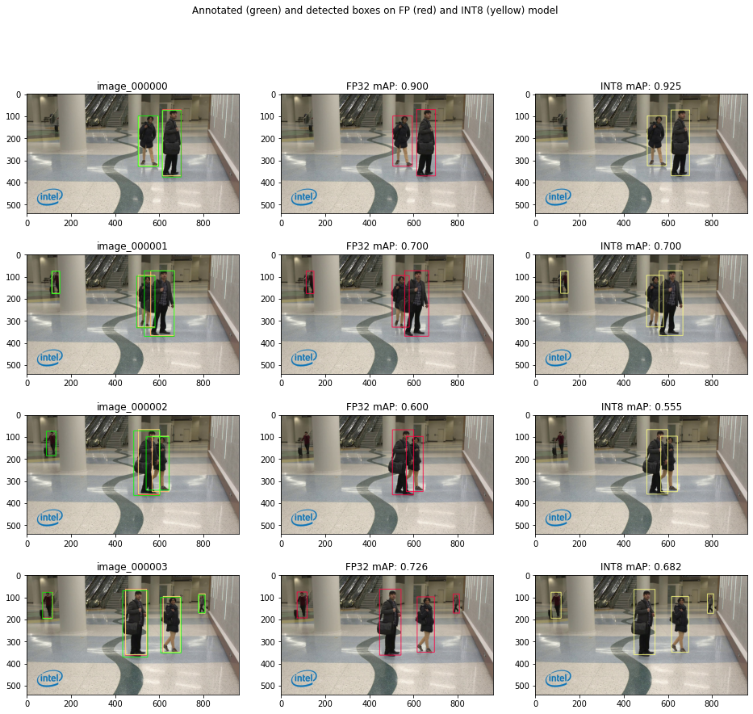

<!DOCTYPE html>

<html lang="en">
  <head>
    <meta charset="utf-8" />
    <meta name="viewport" content="width=device-width, initial-scale=1.0" /><meta name="generator" content="Docutils 0.17.1: http://docutils.sourceforge.net/" />

    <title>Object Detection Quantization &#8212; OpenVINO™  documentation</title>
    
    
  <link href="../_static/css/theme.css" rel="stylesheet">
  <link href="../_static/css/index.ff1ffe594081f20da1ef19478df9384b.css" rel="stylesheet">

    
  <link rel="stylesheet"
    href="../_static/vendor/fontawesome/5.13.0/css/all.min.css">
  <link rel="preload" as="font" type="font/woff2" crossorigin
    href="../_static/vendor/fontawesome/5.13.0/webfonts/fa-solid-900.woff2">
  <link rel="preload" as="font" type="font/woff2" crossorigin
    href="../_static/vendor/fontawesome/5.13.0/webfonts/fa-brands-400.woff2">

    
      

    
    <link rel="stylesheet" type="text/css" href="../_static/pygments.css" />
    <link rel="stylesheet" type="text/css" href="../_static/css/blank.css" />
    <link rel="stylesheet" type="text/css" href="../_static/tabs.css" />
    <link rel="stylesheet" type="text/css" href="../_static/copybutton.css" />
    <link rel="stylesheet" type="text/css" href="../_static/mystnb.css" />
    <link rel="stylesheet" type="text/css" href="../_static/togglebutton.css" />
    <link rel="stylesheet" type="text/css" href="../_static/panels-main.c949a650a448cc0ae9fd3441c0e17fb0.css" />
    <link rel="stylesheet" type="text/css" href="../_static/panels-variables.06eb56fa6e07937060861dad626602ad.css" />
    <link rel="stylesheet" type="text/css" href="../_static/doxyrest-pygments.css" />
    
  <link rel="preload" as="script" href="../_static/js/index.be7d3bbb2ef33a8344ce.js">

    <link href="../_static/css/media/favicon.ico" rel="shortcut icon">
    <link rel="stylesheet" href="../_static/css/openvino_sphinx_theme.css" type="text/css" />
    <link rel="stylesheet" href="../_static/css/button.css" type="text/css" />
    <link rel="stylesheet" href="../_static/css/input.css" type="text/css" />
    <link rel="stylesheet" href="../_static/css/textfield.css" type="text/css" />
    <link rel="stylesheet" href="../_static/css/tabs.css" type="text/css" />
    <script src="../_static/js/openvino_sphinx_theme.js"></script>
    <link rel="stylesheet" href="../_static/css/viewer.min.css" type="text/css" />
    <link rel="stylesheet" href="../_static/css/custom.css" type="text/css" />

    <script src="https://cdn.jsdelivr.net/npm/chart.js@2.9.3/dist/Chart.min.js"></script>
    <script src="https://cdn.jsdelivr.net/npm/chartjs-plugin-datalabels"></script>
    <script src="https://cdnjs.cloudflare.com/ajax/libs/chartjs-plugin-annotation/0.5.7/chartjs-plugin-annotation.min.js"></script>
    <script src="https://cdn.jsdelivr.net/npm/chartjs-plugin-barchart-background@1.3.0/build/Plugin.Barchart.Background.min.js"></script>
    <script src="https://cdn.jsdelivr.net/npm/chartjs-plugin-deferred@1"></script>
    <script src="https://cdnjs.cloudflare.com/ajax/libs/PapaParse/5.3.1/papaparse.min.js"></script>
    <script src="../_static/js/viewer.min.js"></script>
    <script src="/assets/versions_raw.js"></script>

    <script data-url_root="../" id="documentation_options" src="../_static/documentation_options.js"></script>
    <script src="../_static/jquery.js"></script>
    <script src="../_static/underscore.js"></script>
    <script src="../_static/doctools.js"></script>
    <script src="../_static/tabs.js"></script>
    <script src="../_static/clipboard.min.js"></script>
    <script src="../_static/copybutton.js"></script>
    <script src="../_static/js/custom.js"></script>
    <script src="../_static/js/graphs.js"></script>
    <script src="../_static/js/graphs_ov_tf.js"></script>
    <script>let toggleHintShow = 'Click to show';</script>
    <script>let toggleHintHide = 'Click to hide';</script>
    <script>let toggleOpenOnPrint = 'true';</script>
    <script src="../_static/togglebutton.js"></script>
    <script src="../_static/target-highlight.js"></script>
    <script>var togglebuttonSelector = '.toggle, .admonition.dropdown, .tag_hide_input div.cell_input, .tag_hide-input div.cell_input, .tag_hide_output div.cell_output, .tag_hide-output div.cell_output, .tag_hide_cell.cell, .tag_hide-cell.cell';</script>
    <link rel="canonical" href="https://docs.openvino.ai/latest/notebooks/111-detection-quantization-with-output.html" />
    <link rel="shortcut icon" href="../_static/favicon.ico"/>
    <link rel="index" title="Index" href="../genindex.html" />
    <link rel="search" title="Search" href="../search.html" />
    <link rel="next" title="Post-Training Quantization of PyTorch models with NNCF" href="112-pytorch-post-training-quantization-nncf-with-output.html" />
    <link rel="prev" title="Quantize a Segmentation Model and Show Live Inference" href="110-ct-segmentation-quantize-with-output.html" />
    <meta name="viewport" content="width=device-width, initial-scale=1" />
    <meta name="docsearch:language" content="en">
    

    <!-- Google Analytics -->
    
  </head>
  <body data-spy="scroll" data-target="#bd-toc-nav" data-offset="80">
    
    <div class="container-fluid" id="banner"></div>

    
      <nav class="navbar navbar-light navbar-expand-lg bg-light fixed-top bd-navbar" id="navbar-main"><div class="container-xl">

  <div id="navbar-start">
    
    

<a class="navbar-brand" href="../index.html">
  
</a>


    
  </div>

  <button class="navbar-toggler" type="button" data-toggle="collapse" data-target="#navbar-collapsible" aria-controls="navbar-collapsible" aria-expanded="false" aria-label="Toggle navigation">
    <span class="navbar-toggler-icon"></span>
  </button>

  
  <div id="navbar-collapsible" class="col-lg-9 collapse navbar-collapse">
    <div id="navbar-center" class="mr-auto">
      
      <div class="navbar-center-item">
        <ul id="navbar-main-elements" class="navbar-nav">
    <li class="toctree-l1 nav-item">
 <a class="reference internal nav-link" href="../pages/get_started.html">
  Get Started
 </a>
</li>

<li class="toctree-l1 nav-item">
 <a class="reference internal nav-link" href="../pages/documentation.html">
  Documentation
 </a>
</li>

<li class="toctree-l1 nav-item">
 <a class="reference internal nav-link" href="../tutorials.html">
  Tutorials
 </a>
</li>

<li class="toctree-l1 nav-item">
 <a class="reference internal nav-link" href="../api/api_reference.html">
  API Reference
 </a>
</li>

<li class="toctree-l1 nav-item">
 <a class="reference internal nav-link" href="../model_zoo.html">
  Model Zoo
 </a>
</li>

<li class="toctree-l1 nav-item">
 <a class="reference internal nav-link" href="../pages/resources.html">
  Resources
 </a>
</li>

    
</ul>
      </div>
      
    </div>

    <div id="navbar-end">
      
      <div class="navbar-end-item">
        <ul id="navbar-icon-links" class="navbar-nav" aria-label="Icon Links">
        <li class="nav-item">
          <a class="nav-link" href="https://github.com/openvinotoolkit/openvino" rel="noopener" target="_blank" title="GitHub">
            <span><i class="sst-github"></i></span>
            <label class="sr-only">GitHub</label>
          </a>
        </li>
</ul>
      </div>
      
      <div class="navbar-end-item">
        
<div class="dropdown sst-dropdown sst-dropdown-navbar">
  <button class="btn sst-btn dropdown-toggle" type="button" id="version-selector" data-toggle="dropdown" aria-haspopup="true" aria-expanded="false"></button>
  <div class="dropdown-menu" aria-labelledby="version-selector">
  </div>
</div>
      </div>
      
      <div class="navbar-end-item">
        

<div class="dropdown sst-dropdown sst-dropdown-navbar">
  <button class="btn sst-btn dropdown-toggle" type="button" id="language-selector" data-toggle="dropdown" aria-haspopup="true" aria-expanded="false">English</button>
  <div class="dropdown-menu" aria-labelledby="language-selector">
    
      
        <a class="dropdown-item font-weight-bold" href="/latest/notebooks/111-detection-quantization-with-output.html">English</a>
      
    
      
        <a  class="dropdown-item" href="/cn/latest/notebooks/111-detection-quantization-with-output.html">Chinese</a>
      
    
  </div>
</div>

      </div>
      
    </div>
  </div>
</div>
        <div id="collapse-nav-wrapper" class="container-xl">
          <button id="collapse-nav" class="button bttn-prm button-size-m" type="button" data-toggle="collapse" data-target="#nav-tree" aria-expanded="false" aria-controls="nav-tree">
            Documentation navigation <i class="fas fa-chevron-down"></i>
          </button>
        </div>
      </nav>
      <div class="transition-banner container-fluid alert alert-info alert-dismissible fade show" role="alert">
        <p>OpenVINO 2022.1 introduces a new version of OpenVINO API (API 2.0). For more information on the changes and transition steps, see the <a href="https://docs.openvino.ai/latest/openvino_2_0_transition_guide.html">transition guide</a></p>
        <button type="button" class="close" data-dismiss="alert" aria-label="Close">
          <span aria-hidden="true">&times;</span>
        </button>
    </div>
    

    <div class="container-xl">
      <div class="row">
          
            
            <!-- Only show if we have sidebars configured, else just a small margin  -->
            <div class="col-12 col-md-3 bd-sidebar" id="nav-tree"><form class="searchForm bd-search d-flex align-items-center" action="../search.html" method="get">
    <i class="icon fas fa-search"></i>
    <input type="search" class="form-control" name="query" id="search-input" placeholder="Search the docs ..." aria-label="Search the docs ..." autocomplete="off" >
</form><nav class="bd-links" id="bd-docs-nav" aria-label="Main navigation">
  <div class="bd-toc-item active">
    <ul class="nav bd-sidenav">
 <li class="toctree-l1">
  <a class="reference internal" href="001-hello-world-with-output.html">
   Hello Image Classification
  </a>
 </li>
 <li class="toctree-l1">
  <a class="reference internal" href="002-openvino-api-with-output.html">
   OpenVINO API Tutorial
  </a>
 </li>
 <li class="toctree-l1">
  <a class="reference internal" href="003-hello-segmentation-with-output.html">
   Hello Image Segmentation
  </a>
 </li>
 <li class="toctree-l1">
  <a class="reference internal" href="004-hello-detection-with-output.html">
   Hello Object Detection
  </a>
 </li>
</ul>
<ul class="current nav bd-sidenav">
 <li class="toctree-l1">
  <a class="reference internal" href="101-tensorflow-to-openvino-with-output.html">
   Convert a TensorFlow Model to OpenVINO
  </a>
 </li>
 <li class="toctree-l1">
  <a class="reference internal" href="102-pytorch-onnx-to-openvino-with-output.html">
   Convert a PyTorch Model to ONNX and OpenVINO IR
  </a>
 </li>
 <li class="toctree-l1">
  <a class="reference internal" href="103-paddle-onnx-to-openvino-classification-with-output.html">
   Convert a PaddlePaddle Model to ONNX and OpenVINO IR
  </a>
 </li>
 <li class="toctree-l1">
  <a class="reference internal" href="104-model-tools-with-output.html">
   Working with Open Model Zoo Models
  </a>
 </li>
 <li class="toctree-l1">
  <a class="reference internal" href="105-language-quantize-bert-with-output.html">
   Quantize NLP models with OpenVINO Post-Training Optimization Tool ​
  </a>
 </li>
 <li class="toctree-l1">
  <a class="reference internal" href="106-auto-device-with-output.html">
   Automatic Device Selection with OpenVINO™
  </a>
 </li>
 <li class="toctree-l1">
  <a class="reference internal" href="110-ct-segmentation-quantize-with-output.html">
   Quantize a Segmentation Model and Show Live Inference
  </a>
 </li>
 <li class="toctree-l1 current active">
  <a class="current reference internal" href="#">
   Object Detection Quantization
  </a>
 </li>
 <li class="toctree-l1">
  <a class="reference internal" href="112-pytorch-post-training-quantization-nncf-with-output.html">
   Post-Training Quantization of PyTorch models with NNCF
  </a>
 </li>
 <li class="toctree-l1">
  <a class="reference internal" href="113-image-classification-quantization-with-output.html">
   Quantization of Image Classification Models
  </a>
 </li>
 <li class="toctree-l1">
  <a class="reference internal" href="114-quantization-simplified-mode-with-output.html">
   INT8 Quantization with Post-training Optimization Tool (POT) in Simplified Mode tutorial
  </a>
 </li>
</ul>
<ul class="nav bd-sidenav">
 <li class="toctree-l1">
  <a class="reference internal" href="201-vision-monodepth-with-output.html">
   Monodepth Estimation with OpenVINO
  </a>
 </li>
 <li class="toctree-l1">
  <a class="reference internal" href="202-vision-superresolution-image-with-output.html">
   Single Image Super Resolution with OpenVINO
  </a>
 </li>
 <li class="toctree-l1">
  <a class="reference internal" href="202-vision-superresolution-video-with-output.html">
   Video Super Resolution with OpenVINO
  </a>
 </li>
 <li class="toctree-l1">
  <a class="reference internal" href="205-vision-background-removal-with-output.html">
   Image Background Removal with U^2-Net and OpenVINO
  </a>
 </li>
 <li class="toctree-l1">
  <a class="reference internal" href="206-vision-paddlegan-anime-with-output.html">
   Photos to Anime with PaddleGAN and OpenVINO
  </a>
 </li>
 <li class="toctree-l1">
  <a class="reference internal" href="207-vision-paddlegan-superresolution-with-output.html">
   Super Resolution with PaddleGAN and OpenVINO
  </a>
 </li>
 <li class="toctree-l1">
  <a class="reference internal" href="208-optical-character-recognition-with-output.html">
   Optical Character Recognition (OCR) with OpenVINO
  </a>
 </li>
 <li class="toctree-l1">
  <a class="reference internal" href="209-handwritten-ocr-with-output.html">
   Handwritten Chinese and Japanese OCR
  </a>
 </li>
 <li class="toctree-l1">
  <a class="reference internal" href="210-ct-scan-live-inference-with-output.html">
   Live Inference and Benchmark CT-scan Data with OpenVINO
  </a>
 </li>
 <li class="toctree-l1">
  <a class="reference internal" href="211-speech-to-text-with-output.html">
   Speech to Text with OpenVINO
  </a>
 </li>
 <li class="toctree-l1">
  <a class="reference internal" href="212-onnx-style-transfer-with-output.html">
   Style Transfer on ONNX Models with OpenVINO
  </a>
 </li>
 <li class="toctree-l1">
  <a class="reference internal" href="213-question-answering-with-output.html">
   Interactive question answering with OpenVINO
  </a>
 </li>
 <li class="toctree-l1">
  <a class="reference internal" href="214-vision-paddle-classification-with-output.html">
   PaddlePaddle Image Classification with OpenVINO
  </a>
 </li>
 <li class="toctree-l1">
  <a class="reference internal" href="215-image-inpainting-with-output.html">
   Image In-painting with OpenVINO™
  </a>
 </li>
 <li class="toctree-l1">
  <a class="reference internal" href="217-vision-deblur-with-output.html">
   Deblur Photos with DeblurGAN-v2 and OpenVINO
  </a>
 </li>
 <li class="toctree-l1">
  <a class="reference internal" href="218-vehicle-detection-and-recognition-with-output.html">
   Vehicle Detection And Recognition with OpenVINO
  </a>
 </li>
</ul>
<ul class="nav bd-sidenav">
 <li class="toctree-l1">
  <a class="reference internal" href="301-tensorflow-training-openvino-with-output.html">
   From Training to Deployment with TensorFlow and OpenVINO
  </a>
 </li>
 <li class="toctree-l1">
  <a class="reference internal" href="301-tensorflow-training-openvino-pot-with-output.html">
   Post-Training Quantization with TensorFlow Classification Model
  </a>
 </li>
 <li class="toctree-l1">
  <a class="reference internal" href="302-pytorch-quantization-aware-training-with-output.html">
   Quantization Aware Training with NNCF, using PyTorch framework
  </a>
 </li>
 <li class="toctree-l1">
  <a class="reference internal" href="305-tensorflow-quantization-aware-training-with-output.html">
   Quantization Aware Training with NNCF, using TensorFlow Framework
  </a>
 </li>
</ul>
<ul class="nav bd-sidenav">
 <li class="toctree-l1">
  <a class="reference internal" href="401-object-detection-with-output.html">
   Live Object Detection with OpenVINO
  </a>
 </li>
 <li class="toctree-l1">
  <a class="reference internal" href="402-pose-estimation-with-output.html">
   Live Human Pose Estimation with OpenVINO
  </a>
 </li>
 <li class="toctree-l1">
  <a class="reference internal" href="403-action-recognition-webcam-with-output.html">
   Human Action Recognition with OpenVINO
  </a>
 </li>
 <li class="toctree-l1">
  <a class="reference internal" href="405-paddle-ocr-webcam-with-output.html">
   PaddleOCR with OpenVINO
  </a>
 </li>
</ul>

  </div>
</nav>
            </div>
            
          

          
          <div class="d-none d-xl-block col-xl-2 bd-toc">
            
              
              <div class="toc-item">
                
<div class="tocsection onthispage pt-5 pb-3">
    <i class="fas fa-list"></i> On this page
</div>

<nav id="bd-toc-nav">
    <ul class="visible nav section-nav flex-column">
 <li class="toc-h2 nav-item toc-entry">
  <a class="reference internal nav-link" href="#preparation">
   Preparation
  </a>
  <ul class="nav section-nav flex-column">
   <li class="toc-h3 nav-item toc-entry">
    <a class="reference internal nav-link" href="#imports">
     Imports
    </a>
   </li>
   <li class="toc-h3 nav-item toc-entry">
    <a class="reference internal nav-link" href="#download-model">
     Download Model
    </a>
   </li>
   <li class="toc-h3 nav-item toc-entry">
    <a class="reference internal nav-link" href="#load-model">
     Load Model
    </a>
   </li>
  </ul>
 </li>
 <li class="toc-h2 nav-item toc-entry">
  <a class="reference internal nav-link" href="#post-training-optimization-tool-pot-quantization">
   Post-Training Optimization Tool (POT) Quantization
  </a>
  <ul class="nav section-nav flex-column">
   <li class="toc-h3 nav-item toc-entry">
    <a class="reference internal nav-link" href="#configuration">
     Configuration
    </a>
    <ul class="nav section-nav flex-column">
     <li class="toc-h4 nav-item toc-entry">
      <a class="reference internal nav-link" href="#dataset">
       Dataset
      </a>
     </li>
     <li class="toc-h4 nav-item toc-entry">
      <a class="reference internal nav-link" href="#metric">
       Metric
      </a>
     </li>
     <li class="toc-h4 nav-item toc-entry">
      <a class="reference internal nav-link" href="#quantization-config">
       Quantization Config
      </a>
     </li>
    </ul>
   </li>
   <li class="toc-h3 nav-item toc-entry">
    <a class="reference internal nav-link" href="#run-quantization-pipeline">
     Run Quantization Pipeline
    </a>
   </li>
  </ul>
 </li>
 <li class="toc-h2 nav-item toc-entry">
  <a class="reference internal nav-link" href="#compare-metric-of-floating-point-and-quantized-model">
   Compare Metric of Floating Point and Quantized Model
  </a>
 </li>
 <li class="toc-h2 nav-item toc-entry">
  <a class="reference internal nav-link" href="#visualize-results">
   Visualize Results
  </a>
 </li>
 <li class="toc-h2 nav-item toc-entry">
  <a class="reference internal nav-link" href="#compare-the-size-of-the-original-and-quantized-models">
   Compare the Size of the Original and Quantized Models
  </a>
 </li>
 <li class="toc-h2 nav-item toc-entry">
  <a class="reference internal nav-link" href="#compare-performance-of-the-original-and-quantized-models">
   Compare Performance of the Original and Quantized Models
  </a>
 </li>
</ul>

</nav>
              </div>
              
              <div class="toc-item">
                <div class="tocsection download-docs">
  <div class="dropdown sst-dropdown">
    <button class="button bttn-prm button-size-m" data-display="static" type="button" id="download-options"
      data-toggle="dropdown" aria-haspopup="true" aria-expanded="false">
      Download Docs
    </button>
    <div class="dropdown-menu" aria-labelledby="download-options">
      <a class="dropdown-item" href="#" onclick="window.print()">.pdf</a>
      <a id="download-zip-btn" class="dropdown-item" href="#">.zip</a>
    </div>
  </div>
</div>
              </div>
              
            
          </div>
          

          
          
              
          
          <main class="col-12 col-md-9 col-xl-7 py-md-5 pl-md-5 pr-md-4 bd-content" role="main">

<div class="tocsection editthispage">
    <a href="None">
        <i class="fas fa-pencil-alt"></i> Edit this page
    </a>
</div>

            
                <div>
                  
  <section id="object-detection-quantization">
<h1>Object Detection Quantization<a class="headerlink" href="#object-detection-quantization" title="Permalink to this headline">¶</a></h1>
<p>This tutorial shows how to quantize an object detection model, using
OpenVINO’s <a class="reference external" href="https://docs.openvino.ai/2021.4/pot_compression_api_README.html">Post-Training Optimization Tool
API</a>.</p>
<p>For demonstration purposes, we use a very small dataset of 10 images
presenting people at the airport. The images have been resized from the
original resolution of 1920x1080 to 960x540. For any real use cases, a
representative dataset of about 300 images is recommended. The model
used is:
<a class="reference external" href="https://github.com/openvinotoolkit/open_model_zoo/tree/master/models/intel/person-detection-retail-0013">person-detection-retail-0013</a></p>
<section id="preparation">
<h2>Preparation<a class="headerlink" href="#preparation" title="Permalink to this headline">¶</a></h2>
<section id="imports">
<h3>Imports<a class="headerlink" href="#imports" title="Permalink to this headline">¶</a></h3>
<div class="highlight-ipython3 notranslate"><div class="highlight"><pre><span></span><span class="kn">import</span> <span class="nn">json</span>
<span class="kn">import</span> <span class="nn">sys</span>
<span class="kn">import</span> <span class="nn">time</span>
<span class="kn">from</span> <span class="nn">pathlib</span> <span class="kn">import</span> <span class="n">Path</span>
<span class="kn">from</span> <span class="nn">typing</span> <span class="kn">import</span> <span class="n">Sequence</span><span class="p">,</span> <span class="n">Tuple</span>

<span class="kn">import</span> <span class="nn">addict</span>
<span class="kn">import</span> <span class="nn">cv2</span>
<span class="kn">import</span> <span class="nn">matplotlib.pyplot</span> <span class="k">as</span> <span class="nn">plt</span>
<span class="kn">import</span> <span class="nn">numpy</span> <span class="k">as</span> <span class="nn">np</span>
<span class="kn">import</span> <span class="nn">torch</span>
<span class="kn">import</span> <span class="nn">torchmetrics</span>
<span class="kn">from</span> <span class="nn">compression.api</span> <span class="kn">import</span> <span class="n">DataLoader</span><span class="p">,</span> <span class="n">Metric</span>
<span class="kn">from</span> <span class="nn">compression.engines.ie_engine</span> <span class="kn">import</span> <span class="n">IEEngine</span>
<span class="kn">from</span> <span class="nn">compression.graph</span> <span class="kn">import</span> <span class="n">load_model</span><span class="p">,</span> <span class="n">save_model</span>
<span class="kn">from</span> <span class="nn">compression.graph.model_utils</span> <span class="kn">import</span> <span class="n">compress_model_weights</span>
<span class="kn">from</span> <span class="nn">compression.pipeline.initializer</span> <span class="kn">import</span> <span class="n">create_pipeline</span>
<span class="kn">from</span> <span class="nn">openvino.runtime</span> <span class="kn">import</span> <span class="n">Core</span>
<span class="kn">from</span> <span class="nn">yaspin</span> <span class="kn">import</span> <span class="n">yaspin</span>

<span class="n">sys</span><span class="o">.</span><span class="n">path</span><span class="o">.</span><span class="n">append</span><span class="p">(</span><span class="s2">&quot;../utils&quot;</span><span class="p">)</span>
<span class="kn">from</span> <span class="nn">notebook_utils</span> <span class="kn">import</span> <span class="n">benchmark_model</span>
</pre></div>
</div>
</section>
<section id="download-model">
<h3>Download Model<a class="headerlink" href="#download-model" title="Permalink to this headline">¶</a></h3>
<p>Download the model from Open Model Zoo, if it does not yet exist.</p>
<div class="highlight-ipython3 notranslate"><div class="highlight"><pre><span></span><span class="n">ir_path</span> <span class="o">=</span> <span class="n">Path</span><span class="p">(</span><span class="s2">&quot;intel/person-detection-retail-0013/FP32/person-detection-retail-0013.xml&quot;</span><span class="p">)</span>

<span class="k">if</span> <span class="ow">not</span> <span class="n">ir_path</span><span class="o">.</span><span class="n">exists</span><span class="p">():</span>
    <span class="o">!</span> omz_downloader --name <span class="s2">&quot;person-detection-retail-0013&quot;</span> --precisions FP32
</pre></div>
</div>
<div class="highlight-default notranslate"><div class="highlight"><pre><span></span><span class="c1">################|| Downloading person-detection-retail-0013 ||################</span>

<span class="o">==========</span> <span class="n">Downloading</span> <span class="o">/</span><span class="n">home</span><span class="o">/</span><span class="n">runner</span><span class="o">/</span><span class="n">work</span><span class="o">/</span><span class="n">openvino_notebooks</span><span class="o">/</span><span class="n">openvino_notebooks</span><span class="o">/</span><span class="n">notebooks</span><span class="o">/</span><span class="mi">111</span><span class="o">-</span><span class="n">detection</span><span class="o">-</span><span class="n">quantization</span><span class="o">/</span><span class="n">intel</span><span class="o">/</span><span class="n">person</span><span class="o">-</span><span class="n">detection</span><span class="o">-</span><span class="n">retail</span><span class="o">-</span><span class="mi">0013</span><span class="o">/</span><span class="n">FP32</span><span class="o">/</span><span class="n">person</span><span class="o">-</span><span class="n">detection</span><span class="o">-</span><span class="n">retail</span><span class="o">-</span><span class="mf">0013.</span><span class="n">xml</span>


<span class="o">==========</span> <span class="n">Downloading</span> <span class="o">/</span><span class="n">home</span><span class="o">/</span><span class="n">runner</span><span class="o">/</span><span class="n">work</span><span class="o">/</span><span class="n">openvino_notebooks</span><span class="o">/</span><span class="n">openvino_notebooks</span><span class="o">/</span><span class="n">notebooks</span><span class="o">/</span><span class="mi">111</span><span class="o">-</span><span class="n">detection</span><span class="o">-</span><span class="n">quantization</span><span class="o">/</span><span class="n">intel</span><span class="o">/</span><span class="n">person</span><span class="o">-</span><span class="n">detection</span><span class="o">-</span><span class="n">retail</span><span class="o">-</span><span class="mi">0013</span><span class="o">/</span><span class="n">FP32</span><span class="o">/</span><span class="n">person</span><span class="o">-</span><span class="n">detection</span><span class="o">-</span><span class="n">retail</span><span class="o">-</span><span class="mf">0013.</span><span class="n">bin</span>
</pre></div>
</div>
</section>
<section id="load-model">
<h3>Load Model<a class="headerlink" href="#load-model" title="Permalink to this headline">¶</a></h3>
<p>Load the IR model, and get information about network inputs and outputs.</p>
<div class="highlight-ipython3 notranslate"><div class="highlight"><pre><span></span><span class="n">ie</span> <span class="o">=</span> <span class="n">Core</span><span class="p">()</span>
<span class="n">model</span> <span class="o">=</span> <span class="n">ie</span><span class="o">.</span><span class="n">read_model</span><span class="p">(</span><span class="n">model</span><span class="o">=</span><span class="n">ir_path</span><span class="p">)</span>
<span class="n">compiled_model</span> <span class="o">=</span> <span class="n">ie</span><span class="o">.</span><span class="n">compile_model</span><span class="p">(</span><span class="n">model</span><span class="o">=</span><span class="n">model</span><span class="p">,</span> <span class="n">device_name</span><span class="o">=</span><span class="s2">&quot;CPU&quot;</span><span class="p">)</span>
<span class="n">input_layer</span> <span class="o">=</span> <span class="n">compiled_model</span><span class="o">.</span><span class="n">input</span><span class="p">(</span><span class="mi">0</span><span class="p">)</span>
<span class="n">output_layer</span> <span class="o">=</span> <span class="n">compiled_model</span><span class="o">.</span><span class="n">output</span><span class="p">(</span><span class="mi">0</span><span class="p">)</span>
<span class="n">input_size</span> <span class="o">=</span> <span class="n">input_layer</span><span class="o">.</span><span class="n">shape</span>
<span class="n">_</span><span class="p">,</span> <span class="n">_</span><span class="p">,</span> <span class="n">input_height</span><span class="p">,</span> <span class="n">input_width</span> <span class="o">=</span> <span class="n">input_size</span>
</pre></div>
</div>
</section>
</section>
<section id="post-training-optimization-tool-pot-quantization">
<h2>Post-Training Optimization Tool (POT) Quantization<a class="headerlink" href="#post-training-optimization-tool-pot-quantization" title="Permalink to this headline">¶</a></h2>
<p>The Post-Training Optimization Tool (POT) <code class="docutils literal notranslate"><span class="pre">compression</span></code> API defines
base classes for <code class="docutils literal notranslate"><span class="pre">Metric</span></code> and <code class="docutils literal notranslate"><span class="pre">DataLoader</span></code>. In this notebook, we use
a custom Metric and DataLoader class that implement all the required
methods.</p>
<p>To implement the Metric and Dataloader, we need to know the outputs of
the model and the annotation format.</p>
<p>The dataset in this example uses annotations in JSON format, with keys:
<code class="docutils literal notranslate"><span class="pre">['categories',</span> <span class="pre">'annotations',</span> <span class="pre">'images']</span></code>. <code class="docutils literal notranslate"><span class="pre">annotations</span></code> is a list
of dictionaries, with one item per annotation. Such item contains a
<code class="docutils literal notranslate"><span class="pre">boxes</span></code> key, which holds the prediction boxes, in the
<code class="docutils literal notranslate"><span class="pre">[xmin,</span> <span class="pre">xmax,</span> <span class="pre">ymin,</span> <span class="pre">ymax]</span></code> format. In this dataset there is only one
label: “person”.</p>
<p>The <a class="reference external" href="https://github.com/openvinotoolkit/open_model_zoo/tree/master/models/intel/person-detection-retail-0013">model
documentation</a>
specifies that the model returns an array of shape <code class="docutils literal notranslate"><span class="pre">[1,</span> <span class="pre">1,</span> <span class="pre">200,</span> <span class="pre">7]</span></code>
where 200 is the number of detected boxes. Each detection has the format
of <code class="docutils literal notranslate"><span class="pre">[image_id,</span> <span class="pre">label,</span> <span class="pre">conf,</span> <span class="pre">x_min,</span> <span class="pre">y_min,</span> <span class="pre">x_max,</span> <span class="pre">y_max]</span></code>. For this
dataset the label of <code class="docutils literal notranslate"><span class="pre">1</span></code> indicates a person.</p>
<section id="configuration">
<h3>Configuration<a class="headerlink" href="#configuration" title="Permalink to this headline">¶</a></h3>
<section id="dataset">
<h4>Dataset<a class="headerlink" href="#dataset" title="Permalink to this headline">¶</a></h4>
<p>The <code class="docutils literal notranslate"><span class="pre">DetectionDataLoader</span></code> class follows POT’s
<code class="docutils literal notranslate"><span class="pre">compression.api.DataLoader</span></code> interface, which should implement
<code class="docutils literal notranslate"><span class="pre">__init__</span></code>, <code class="docutils literal notranslate"><span class="pre">__getitem__</span></code> and <code class="docutils literal notranslate"><span class="pre">__len__</span></code>, where <code class="docutils literal notranslate"><span class="pre">__getitem__</span></code>
should return data as <code class="docutils literal notranslate"><span class="pre">(annotation,</span> <span class="pre">image)</span></code> or optionally
<code class="docutils literal notranslate"><span class="pre">(annotation,</span> <span class="pre">image,</span> <span class="pre">metadata)</span></code>, with annotation as
<code class="docutils literal notranslate"><span class="pre">(index,</span> <span class="pre">label)</span></code>.</p>
<div class="highlight-ipython3 notranslate"><div class="highlight"><pre><span></span><span class="k">class</span> <span class="nc">DetectionDataLoader</span><span class="p">(</span><span class="n">DataLoader</span><span class="p">):</span>
    <span class="k">def</span> <span class="fm">__init__</span><span class="p">(</span><span class="bp">self</span><span class="p">,</span> <span class="n">basedir</span><span class="p">:</span> <span class="nb">str</span><span class="p">,</span> <span class="n">target_size</span><span class="p">:</span> <span class="n">Tuple</span><span class="p">[</span><span class="nb">int</span><span class="p">,</span> <span class="nb">int</span><span class="p">]):</span>
        <span class="sd">&quot;&quot;&quot;</span>
<span class="sd">        :param basedir: Directory that contains images and annotation as &quot;annotation.json&quot;</span>
<span class="sd">        :param target_size: Tuple of (width, height) to resize images to.</span>
<span class="sd">        &quot;&quot;&quot;</span>
        <span class="bp">self</span><span class="o">.</span><span class="n">images</span> <span class="o">=</span> <span class="nb">sorted</span><span class="p">(</span><span class="n">Path</span><span class="p">(</span><span class="n">basedir</span><span class="p">)</span><span class="o">.</span><span class="n">glob</span><span class="p">(</span><span class="s2">&quot;*.jpg&quot;</span><span class="p">))</span>
        <span class="bp">self</span><span class="o">.</span><span class="n">target_size</span> <span class="o">=</span> <span class="n">target_size</span>
        <span class="k">with</span> <span class="nb">open</span><span class="p">(</span><span class="sa">f</span><span class="s2">&quot;</span><span class="si">{</span><span class="n">basedir</span><span class="si">}</span><span class="s2">/annotation_person_train.json&quot;</span><span class="p">)</span> <span class="k">as</span> <span class="n">f</span><span class="p">:</span>
            <span class="bp">self</span><span class="o">.</span><span class="n">annotations</span> <span class="o">=</span> <span class="n">json</span><span class="o">.</span><span class="n">load</span><span class="p">(</span><span class="n">f</span><span class="p">)</span>
        <span class="bp">self</span><span class="o">.</span><span class="n">image_ids</span> <span class="o">=</span> <span class="p">{</span>
            <span class="n">Path</span><span class="p">(</span><span class="n">item</span><span class="p">[</span><span class="s2">&quot;file_name&quot;</span><span class="p">])</span><span class="o">.</span><span class="n">name</span><span class="p">:</span> <span class="n">item</span><span class="p">[</span><span class="s2">&quot;id&quot;</span><span class="p">]</span>
            <span class="k">for</span> <span class="n">item</span> <span class="ow">in</span> <span class="bp">self</span><span class="o">.</span><span class="n">annotations</span><span class="p">[</span><span class="s2">&quot;images&quot;</span><span class="p">]</span>
        <span class="p">}</span>

        <span class="k">for</span> <span class="n">image_filename</span> <span class="ow">in</span> <span class="bp">self</span><span class="o">.</span><span class="n">images</span><span class="p">:</span>
            <span class="n">annotations</span> <span class="o">=</span> <span class="p">[</span>
                <span class="n">item</span>
                <span class="k">for</span> <span class="n">item</span> <span class="ow">in</span> <span class="bp">self</span><span class="o">.</span><span class="n">annotations</span><span class="p">[</span><span class="s2">&quot;annotations&quot;</span><span class="p">]</span>
                <span class="k">if</span> <span class="n">item</span><span class="p">[</span><span class="s2">&quot;image_id&quot;</span><span class="p">]</span> <span class="o">==</span> <span class="bp">self</span><span class="o">.</span><span class="n">image_ids</span><span class="p">[</span><span class="n">Path</span><span class="p">(</span><span class="n">image_filename</span><span class="p">)</span><span class="o">.</span><span class="n">name</span><span class="p">]</span>
            <span class="p">]</span>
            <span class="k">assert</span> <span class="p">(</span>
                <span class="nb">len</span><span class="p">(</span><span class="n">annotations</span><span class="p">)</span> <span class="o">!=</span> <span class="mi">0</span>
            <span class="p">),</span> <span class="sa">f</span><span class="s2">&quot;No annotations found for image id </span><span class="si">{</span><span class="n">image_filename</span><span class="si">}</span><span class="s2">&quot;</span>

        <span class="nb">print</span><span class="p">(</span>
            <span class="sa">f</span><span class="s2">&quot;Created dataset with </span><span class="si">{</span><span class="nb">len</span><span class="p">(</span><span class="bp">self</span><span class="o">.</span><span class="n">images</span><span class="p">)</span><span class="si">}</span><span class="s2"> items. Data directory: </span><span class="si">{</span><span class="n">basedir</span><span class="si">}</span><span class="s2">&quot;</span>
        <span class="p">)</span>

    <span class="k">def</span> <span class="fm">__getitem__</span><span class="p">(</span><span class="bp">self</span><span class="p">,</span> <span class="n">index</span><span class="p">):</span>
        <span class="sd">&quot;&quot;&quot;</span>
<span class="sd">        Get an item from the dataset at the specified index.</span>
<span class="sd">        Detection boxes are converted from absolute coordinates to relative coordinates</span>
<span class="sd">        between 0 and 1 by dividing xmin, xmax by image width and ymin, ymax by image height.</span>

<span class="sd">        :return: (annotation, input_image, metadata) where annotation is (index, target_annotation)</span>
<span class="sd">                 with target_annotation as a dictionary with keys category_id, image_width, image_height</span>
<span class="sd">                 and bbox, containing the relative bounding box coordinates [xmin, ymin, xmax, ymax]</span>
<span class="sd">                 (with values between 0 and 1) and metadata a dictionary: {&quot;filename&quot;: path_to_image}</span>
<span class="sd">        &quot;&quot;&quot;</span>
        <span class="n">image_path</span> <span class="o">=</span> <span class="bp">self</span><span class="o">.</span><span class="n">images</span><span class="p">[</span><span class="n">index</span><span class="p">]</span>
        <span class="n">image</span> <span class="o">=</span> <span class="n">cv2</span><span class="o">.</span><span class="n">imread</span><span class="p">(</span><span class="nb">str</span><span class="p">(</span><span class="n">image_path</span><span class="p">))</span>
        <span class="n">image</span> <span class="o">=</span> <span class="n">cv2</span><span class="o">.</span><span class="n">resize</span><span class="p">(</span><span class="n">image</span><span class="p">,</span> <span class="bp">self</span><span class="o">.</span><span class="n">target_size</span><span class="p">)</span>
        <span class="n">image_id</span> <span class="o">=</span> <span class="bp">self</span><span class="o">.</span><span class="n">image_ids</span><span class="p">[</span><span class="n">Path</span><span class="p">(</span><span class="n">image_path</span><span class="p">)</span><span class="o">.</span><span class="n">name</span><span class="p">]</span>

        <span class="c1"># image_info contains height and width of the annotated image</span>
        <span class="n">image_info</span> <span class="o">=</span> <span class="p">[</span>
            <span class="n">image</span> <span class="k">for</span> <span class="n">image</span> <span class="ow">in</span> <span class="bp">self</span><span class="o">.</span><span class="n">annotations</span><span class="p">[</span><span class="s2">&quot;images&quot;</span><span class="p">]</span> <span class="k">if</span> <span class="n">image</span><span class="p">[</span><span class="s2">&quot;id&quot;</span><span class="p">]</span> <span class="o">==</span> <span class="n">image_id</span>
        <span class="p">][</span><span class="mi">0</span><span class="p">]</span>
        <span class="c1"># image_annotations contains the boxes and labels for the image</span>
        <span class="n">image_annotations</span> <span class="o">=</span> <span class="p">[</span>
            <span class="n">item</span>
            <span class="k">for</span> <span class="n">item</span> <span class="ow">in</span> <span class="bp">self</span><span class="o">.</span><span class="n">annotations</span><span class="p">[</span><span class="s2">&quot;annotations&quot;</span><span class="p">]</span>
            <span class="k">if</span> <span class="n">item</span><span class="p">[</span><span class="s2">&quot;image_id&quot;</span><span class="p">]</span> <span class="o">==</span> <span class="n">image_id</span>
        <span class="p">]</span>

        <span class="c1"># annotations are in xmin, ymin, width, height format. Convert to</span>
        <span class="c1"># xmin, ymin, xmax, ymax and normalize to image width and height as</span>
        <span class="c1"># stored in the annotation</span>
        <span class="n">target_annotations</span> <span class="o">=</span> <span class="p">[]</span>
        <span class="k">for</span> <span class="n">annotation</span> <span class="ow">in</span> <span class="n">image_annotations</span><span class="p">:</span>
            <span class="n">xmin</span><span class="p">,</span> <span class="n">ymin</span><span class="p">,</span> <span class="n">width</span><span class="p">,</span> <span class="n">height</span> <span class="o">=</span> <span class="n">annotation</span><span class="p">[</span><span class="s2">&quot;bbox&quot;</span><span class="p">]</span>
            <span class="n">xmax</span> <span class="o">=</span> <span class="n">xmin</span> <span class="o">+</span> <span class="n">width</span>
            <span class="n">ymax</span> <span class="o">=</span> <span class="n">ymin</span> <span class="o">+</span> <span class="n">height</span>
            <span class="n">xmin</span> <span class="o">/=</span> <span class="n">image_info</span><span class="p">[</span><span class="s2">&quot;width&quot;</span><span class="p">]</span>
            <span class="n">ymin</span> <span class="o">/=</span> <span class="n">image_info</span><span class="p">[</span><span class="s2">&quot;height&quot;</span><span class="p">]</span>
            <span class="n">xmax</span> <span class="o">/=</span> <span class="n">image_info</span><span class="p">[</span><span class="s2">&quot;width&quot;</span><span class="p">]</span>
            <span class="n">ymax</span> <span class="o">/=</span> <span class="n">image_info</span><span class="p">[</span><span class="s2">&quot;height&quot;</span><span class="p">]</span>
            <span class="n">target_annotation</span> <span class="o">=</span> <span class="p">{}</span>
            <span class="n">target_annotation</span><span class="p">[</span><span class="s2">&quot;category_id&quot;</span><span class="p">]</span> <span class="o">=</span> <span class="n">annotation</span><span class="p">[</span><span class="s2">&quot;category_id&quot;</span><span class="p">]</span>
            <span class="n">target_annotation</span><span class="p">[</span><span class="s2">&quot;image_width&quot;</span><span class="p">]</span> <span class="o">=</span> <span class="n">image_info</span><span class="p">[</span><span class="s2">&quot;width&quot;</span><span class="p">]</span>
            <span class="n">target_annotation</span><span class="p">[</span><span class="s2">&quot;image_height&quot;</span><span class="p">]</span> <span class="o">=</span> <span class="n">image_info</span><span class="p">[</span><span class="s2">&quot;height&quot;</span><span class="p">]</span>
            <span class="n">target_annotation</span><span class="p">[</span><span class="s2">&quot;bbox&quot;</span><span class="p">]</span> <span class="o">=</span> <span class="p">[</span><span class="n">xmin</span><span class="p">,</span> <span class="n">ymin</span><span class="p">,</span> <span class="n">xmax</span><span class="p">,</span> <span class="n">ymax</span><span class="p">]</span>
            <span class="n">target_annotations</span><span class="o">.</span><span class="n">append</span><span class="p">(</span><span class="n">target_annotation</span><span class="p">)</span>

        <span class="n">item_annotation</span> <span class="o">=</span> <span class="p">(</span><span class="n">index</span><span class="p">,</span> <span class="n">target_annotations</span><span class="p">)</span>
        <span class="n">input_image</span> <span class="o">=</span> <span class="n">np</span><span class="o">.</span><span class="n">expand_dims</span><span class="p">(</span><span class="n">image</span><span class="o">.</span><span class="n">transpose</span><span class="p">(</span><span class="mi">2</span><span class="p">,</span> <span class="mi">0</span><span class="p">,</span> <span class="mi">1</span><span class="p">),</span> <span class="n">axis</span><span class="o">=</span><span class="mi">0</span><span class="p">)</span><span class="o">.</span><span class="n">astype</span><span class="p">(</span>
            <span class="n">np</span><span class="o">.</span><span class="n">float32</span>
        <span class="p">)</span>
        <span class="k">return</span> <span class="p">(</span>
            <span class="n">item_annotation</span><span class="p">,</span>
            <span class="n">input_image</span><span class="p">,</span>
            <span class="p">{</span><span class="s2">&quot;filename&quot;</span><span class="p">:</span> <span class="nb">str</span><span class="p">(</span><span class="n">image_path</span><span class="p">),</span> <span class="s2">&quot;shape&quot;</span><span class="p">:</span> <span class="n">image</span><span class="o">.</span><span class="n">shape</span><span class="p">},</span>
        <span class="p">)</span>

    <span class="k">def</span> <span class="fm">__len__</span><span class="p">(</span><span class="bp">self</span><span class="p">):</span>
        <span class="k">return</span> <span class="nb">len</span><span class="p">(</span><span class="bp">self</span><span class="o">.</span><span class="n">images</span><span class="p">)</span>
</pre></div>
</div>
</section>
<section id="metric">
<h4>Metric<a class="headerlink" href="#metric" title="Permalink to this headline">¶</a></h4>
<p>Define a metric to determine the model’s performance. For the Default
Quantization algorithm used in this notebook, defining a metric is
optional, but it can be used to compare the quantized INT8 model with
the original FP IR model.</p>
<p>In this tutorial we use the Mean Average Precision (MAP) metric from
<a class="reference external" href="https://torchmetrics.readthedocs.io/en/latest/references/modules.html#detection-metrics">TorchMetrics</a></p>
<p>A metric for POT inherits from <code class="docutils literal notranslate"><span class="pre">compression.api.Metric</span></code> and should
implement all the methods in this example.</p>
<div class="highlight-ipython3 notranslate"><div class="highlight"><pre><span></span><span class="k">class</span> <span class="nc">MAPMetric</span><span class="p">(</span><span class="n">Metric</span><span class="p">):</span>
    <span class="k">def</span> <span class="fm">__init__</span><span class="p">(</span><span class="bp">self</span><span class="p">,</span> <span class="n">map_value</span><span class="o">=</span><span class="s2">&quot;map&quot;</span><span class="p">):</span>
        <span class="sd">&quot;&quot;&quot;</span>
<span class="sd">        Mean Average Precision Metric. Wraps torchmetrics implementation, see</span>
<span class="sd">        https://torchmetrics.readthedocs.io/en/latest/references/modules.html#map</span>

<span class="sd">        :map_value: specific metric to return. Default: &quot;map&quot;</span>
<span class="sd">                    Change `to one of the values in the list below to return a different value</span>
<span class="sd">                    [&#39;mar_1&#39;, &#39;mar_10&#39;, &#39;mar_100&#39;, &#39;mar_small&#39;, &#39;mar_medium&#39;, &#39;mar_large&#39;,</span>
<span class="sd">                     &#39;map&#39;, &#39;map_50&#39;, &#39;map_75&#39;, &#39;map_small&#39;, &#39;map_medium&#39;, &#39;map_large&#39;]</span>
<span class="sd">                    See torchmetrics documentation for more details.</span>
<span class="sd">        &quot;&quot;&quot;</span>
        <span class="k">assert</span> <span class="p">(</span>
            <span class="n">map_value</span>
            <span class="ow">in</span> <span class="n">torchmetrics</span><span class="o">.</span><span class="n">detection</span><span class="o">.</span><span class="n">map</span><span class="o">.</span><span class="n">MARMetricResults</span><span class="o">.</span><span class="vm">__slots__</span>
            <span class="o">+</span> <span class="n">torchmetrics</span><span class="o">.</span><span class="n">detection</span><span class="o">.</span><span class="n">map</span><span class="o">.</span><span class="n">MAPMetricResults</span><span class="o">.</span><span class="vm">__slots__</span>
        <span class="p">)</span>

        <span class="bp">self</span><span class="o">.</span><span class="n">_name</span> <span class="o">=</span> <span class="n">map_value</span>
        <span class="bp">self</span><span class="o">.</span><span class="n">metric</span> <span class="o">=</span> <span class="n">torchmetrics</span><span class="o">.</span><span class="n">detection</span><span class="o">.</span><span class="n">map</span><span class="o">.</span><span class="n">MAP</span><span class="p">()</span>
        <span class="nb">super</span><span class="p">()</span><span class="o">.</span><span class="fm">__init__</span><span class="p">()</span>

    <span class="nd">@property</span>
    <span class="k">def</span> <span class="nf">value</span><span class="p">(</span><span class="bp">self</span><span class="p">):</span>
        <span class="sd">&quot;&quot;&quot;</span>
<span class="sd">        Returns metric value for the last model output.</span>
<span class="sd">        Possible format: {metric_name: [metric_values_per_image]}</span>
<span class="sd">        &quot;&quot;&quot;</span>
        <span class="k">return</span> <span class="p">{</span><span class="bp">self</span><span class="o">.</span><span class="n">_name</span><span class="p">:</span> <span class="p">[</span><span class="mi">0</span><span class="p">]}</span>

    <span class="nd">@property</span>
    <span class="k">def</span> <span class="nf">avg_value</span><span class="p">(</span><span class="bp">self</span><span class="p">):</span>
        <span class="sd">&quot;&quot;&quot;</span>
<span class="sd">        Returns average metric value for all model outputs.</span>
<span class="sd">        Possible format: {metric_name: metric_value}</span>
<span class="sd">        &quot;&quot;&quot;</span>
        <span class="k">return</span> <span class="p">{</span><span class="bp">self</span><span class="o">.</span><span class="n">_name</span><span class="p">:</span> <span class="bp">self</span><span class="o">.</span><span class="n">metric</span><span class="o">.</span><span class="n">compute</span><span class="p">()[</span><span class="bp">self</span><span class="o">.</span><span class="n">_name</span><span class="p">]</span><span class="o">.</span><span class="n">item</span><span class="p">()}</span>

    <span class="k">def</span> <span class="nf">update</span><span class="p">(</span><span class="bp">self</span><span class="p">,</span> <span class="n">output</span><span class="p">,</span> <span class="n">target</span><span class="p">):</span>
        <span class="sd">&quot;&quot;&quot;</span>
<span class="sd">        Convert network output and labels to the format that torchmetrics&#39; MAP</span>
<span class="sd">        implementation expects, and call `metric.update()`.</span>

<span class="sd">        :param output: model output</span>
<span class="sd">        :param target: annotations for model output</span>
<span class="sd">        &quot;&quot;&quot;</span>
        <span class="n">targetboxes</span> <span class="o">=</span> <span class="p">[]</span>
        <span class="n">targetlabels</span> <span class="o">=</span> <span class="p">[]</span>
        <span class="n">predboxes</span> <span class="o">=</span> <span class="p">[]</span>
        <span class="n">predlabels</span> <span class="o">=</span> <span class="p">[]</span>
        <span class="n">scores</span> <span class="o">=</span> <span class="p">[]</span>

        <span class="n">image_width</span> <span class="o">=</span> <span class="n">target</span><span class="p">[</span><span class="mi">0</span><span class="p">][</span><span class="mi">0</span><span class="p">][</span><span class="s2">&quot;image_width&quot;</span><span class="p">]</span>
        <span class="n">image_height</span> <span class="o">=</span> <span class="n">target</span><span class="p">[</span><span class="mi">0</span><span class="p">][</span><span class="mi">0</span><span class="p">][</span><span class="s2">&quot;image_height&quot;</span><span class="p">]</span>

        <span class="k">for</span> <span class="n">single_target</span> <span class="ow">in</span> <span class="n">target</span><span class="p">[</span><span class="mi">0</span><span class="p">]:</span>
            <span class="n">txmin</span><span class="p">,</span> <span class="n">tymin</span><span class="p">,</span> <span class="n">txmax</span><span class="p">,</span> <span class="n">tymax</span> <span class="o">=</span> <span class="n">single_target</span><span class="p">[</span><span class="s2">&quot;bbox&quot;</span><span class="p">]</span>
            <span class="n">category</span> <span class="o">=</span> <span class="n">single_target</span><span class="p">[</span><span class="s2">&quot;category_id&quot;</span><span class="p">]</span>
            <span class="n">txmin</span> <span class="o">*=</span> <span class="n">image_width</span>
            <span class="n">txmax</span> <span class="o">*=</span> <span class="n">image_width</span>
            <span class="n">tymin</span> <span class="o">*=</span> <span class="n">image_height</span>
            <span class="n">tymax</span> <span class="o">*=</span> <span class="n">image_height</span>

            <span class="n">targetbox</span> <span class="o">=</span> <span class="p">[</span><span class="nb">round</span><span class="p">(</span><span class="n">txmin</span><span class="p">),</span> <span class="nb">round</span><span class="p">(</span><span class="n">tymin</span><span class="p">),</span> <span class="nb">round</span><span class="p">(</span><span class="n">txmax</span><span class="p">),</span> <span class="nb">round</span><span class="p">(</span><span class="n">tymax</span><span class="p">)]</span>
            <span class="n">targetboxes</span><span class="o">.</span><span class="n">append</span><span class="p">(</span><span class="n">targetbox</span><span class="p">)</span>
            <span class="n">targetlabels</span><span class="o">.</span><span class="n">append</span><span class="p">(</span><span class="n">category</span><span class="p">)</span>

        <span class="k">for</span> <span class="n">single_output</span> <span class="ow">in</span> <span class="n">output</span><span class="p">:</span>
            <span class="k">for</span> <span class="n">pred</span> <span class="ow">in</span> <span class="n">single_output</span><span class="p">[</span><span class="mi">0</span><span class="p">,</span> <span class="mi">0</span><span class="p">,</span> <span class="p">::]:</span>
                <span class="n">image_id</span><span class="p">,</span> <span class="n">label</span><span class="p">,</span> <span class="n">conf</span><span class="p">,</span> <span class="n">xmin</span><span class="p">,</span> <span class="n">ymin</span><span class="p">,</span> <span class="n">xmax</span><span class="p">,</span> <span class="n">ymax</span> <span class="o">=</span> <span class="n">pred</span>
                <span class="n">xmin</span> <span class="o">*=</span> <span class="n">image_width</span>
                <span class="n">xmax</span> <span class="o">*=</span> <span class="n">image_width</span>
                <span class="n">ymin</span> <span class="o">*=</span> <span class="n">image_height</span>
                <span class="n">ymax</span> <span class="o">*=</span> <span class="n">image_height</span>

                <span class="n">predbox</span> <span class="o">=</span> <span class="p">[</span><span class="nb">round</span><span class="p">(</span><span class="n">xmin</span><span class="p">),</span> <span class="nb">round</span><span class="p">(</span><span class="n">ymin</span><span class="p">),</span> <span class="nb">round</span><span class="p">(</span><span class="n">xmax</span><span class="p">),</span> <span class="nb">round</span><span class="p">(</span><span class="n">ymax</span><span class="p">)]</span>
                <span class="n">predboxes</span><span class="o">.</span><span class="n">append</span><span class="p">(</span><span class="n">predbox</span><span class="p">)</span>
                <span class="n">predlabels</span><span class="o">.</span><span class="n">append</span><span class="p">(</span><span class="n">label</span><span class="p">)</span>
                <span class="n">scores</span><span class="o">.</span><span class="n">append</span><span class="p">(</span><span class="n">conf</span><span class="p">)</span>

        <span class="n">preds</span> <span class="o">=</span> <span class="p">[</span>
            <span class="nb">dict</span><span class="p">(</span>
                <span class="n">boxes</span><span class="o">=</span><span class="n">torch</span><span class="o">.</span><span class="n">Tensor</span><span class="p">(</span><span class="n">predboxes</span><span class="p">)</span><span class="o">.</span><span class="n">float</span><span class="p">(),</span>
                <span class="n">labels</span><span class="o">=</span><span class="n">torch</span><span class="o">.</span><span class="n">Tensor</span><span class="p">(</span><span class="n">predlabels</span><span class="p">)</span><span class="o">.</span><span class="n">short</span><span class="p">(),</span>
                <span class="n">scores</span><span class="o">=</span><span class="n">torch</span><span class="o">.</span><span class="n">Tensor</span><span class="p">(</span><span class="n">scores</span><span class="p">),</span>
            <span class="p">)</span>
        <span class="p">]</span>
        <span class="n">targets</span> <span class="o">=</span> <span class="p">[</span>
            <span class="nb">dict</span><span class="p">(</span>
                <span class="n">boxes</span><span class="o">=</span><span class="n">torch</span><span class="o">.</span><span class="n">Tensor</span><span class="p">(</span><span class="n">targetboxes</span><span class="p">)</span><span class="o">.</span><span class="n">float</span><span class="p">(),</span>
                <span class="n">labels</span><span class="o">=</span><span class="n">torch</span><span class="o">.</span><span class="n">Tensor</span><span class="p">(</span><span class="n">targetlabels</span><span class="p">)</span><span class="o">.</span><span class="n">short</span><span class="p">(),</span>
            <span class="p">)</span>
        <span class="p">]</span>
        <span class="bp">self</span><span class="o">.</span><span class="n">metric</span><span class="o">.</span><span class="n">update</span><span class="p">(</span><span class="n">preds</span><span class="p">,</span> <span class="n">targets</span><span class="p">)</span>

    <span class="k">def</span> <span class="nf">reset</span><span class="p">(</span><span class="bp">self</span><span class="p">):</span>
        <span class="sd">&quot;&quot;&quot;</span>
<span class="sd">        Resets metric</span>
<span class="sd">        &quot;&quot;&quot;</span>
        <span class="bp">self</span><span class="o">.</span><span class="n">metric</span><span class="o">.</span><span class="n">reset</span><span class="p">()</span>

    <span class="k">def</span> <span class="nf">get_attributes</span><span class="p">(</span><span class="bp">self</span><span class="p">):</span>
        <span class="sd">&quot;&quot;&quot;</span>
<span class="sd">        Returns a dictionary of metric attributes {metric_name: {attribute_name: value}}.</span>
<span class="sd">        Required attributes: &#39;direction&#39;: &#39;higher-better&#39; or &#39;higher-worse&#39;</span>
<span class="sd">                             &#39;type&#39;: metric type</span>
<span class="sd">        &quot;&quot;&quot;</span>
        <span class="k">return</span> <span class="p">{</span><span class="bp">self</span><span class="o">.</span><span class="n">_name</span><span class="p">:</span> <span class="p">{</span><span class="s2">&quot;direction&quot;</span><span class="p">:</span> <span class="s2">&quot;higher-better&quot;</span><span class="p">,</span> <span class="s2">&quot;type&quot;</span><span class="p">:</span> <span class="s2">&quot;mAP&quot;</span><span class="p">}}</span>
</pre></div>
</div>
</section>
<section id="quantization-config">
<h4>Quantization Config<a class="headerlink" href="#quantization-config" title="Permalink to this headline">¶</a></h4>
<p>POT methods expect configuration dictionaries as arguments, which are
defined in the cell below. The variable <code class="docutils literal notranslate"><span class="pre">ir_path</span></code> points to the IR
model’s xml file. It is defined at the top of the notebook. In this
tutorial, we use the DefaultQuantization algorithm.</p>
<p>See <a class="reference external" href="https://docs.openvino.ai/2021.4/pot_docs_BestPractices.html">Post-Training Optimization Best
Practices</a>
and the main <a class="reference external" href="https://docs.openvino.ai/2021.4/pot_README.html">POT
documentation</a> page
for more information about the settings and best practices.</p>
<div class="highlight-ipython3 notranslate"><div class="highlight"><pre><span></span><span class="c1"># Model config specifies the model name and paths to model .xml and .bin file</span>
<span class="n">model_config</span> <span class="o">=</span> <span class="n">addict</span><span class="o">.</span><span class="n">Dict</span><span class="p">(</span>
    <span class="p">{</span>
        <span class="s2">&quot;model_name&quot;</span><span class="p">:</span> <span class="n">ir_path</span><span class="o">.</span><span class="n">stem</span><span class="p">,</span>
        <span class="s2">&quot;model&quot;</span><span class="p">:</span> <span class="n">ir_path</span><span class="p">,</span>
        <span class="s2">&quot;weights&quot;</span><span class="p">:</span> <span class="n">ir_path</span><span class="o">.</span><span class="n">with_suffix</span><span class="p">(</span><span class="s2">&quot;.bin&quot;</span><span class="p">),</span>
    <span class="p">}</span>
<span class="p">)</span>

<span class="c1"># Engine config</span>
<span class="n">engine_config</span> <span class="o">=</span> <span class="n">addict</span><span class="o">.</span><span class="n">Dict</span><span class="p">({</span><span class="s2">&quot;device&quot;</span><span class="p">:</span> <span class="s2">&quot;CPU&quot;</span><span class="p">})</span>

<span class="c1"># Standard DefaultQuantization config. For this tutorial stat_subset_size is ignored</span>
<span class="c1"># because there are fewer than 300 images. For production use 300 is recommended.</span>
<span class="n">default_algorithms</span> <span class="o">=</span> <span class="p">[</span>
    <span class="p">{</span>
        <span class="s2">&quot;name&quot;</span><span class="p">:</span> <span class="s2">&quot;DefaultQuantization&quot;</span><span class="p">,</span>
        <span class="s2">&quot;stat_subset_size&quot;</span><span class="p">:</span> <span class="mi">300</span><span class="p">,</span>
        <span class="s2">&quot;params&quot;</span><span class="p">:</span> <span class="p">{</span>
            <span class="s2">&quot;target_device&quot;</span><span class="p">:</span> <span class="s2">&quot;ANY&quot;</span><span class="p">,</span>
            <span class="s2">&quot;preset&quot;</span><span class="p">:</span> <span class="s2">&quot;mixed&quot;</span><span class="p">,</span>  <span class="c1"># choose between &quot;mixed&quot; and &quot;performance&quot;</span>
        <span class="p">},</span>
    <span class="p">}</span>
<span class="p">]</span>

<span class="nb">print</span><span class="p">(</span><span class="sa">f</span><span class="s2">&quot;model_config: </span><span class="si">{</span><span class="n">model_config</span><span class="si">}</span><span class="s2">&quot;</span><span class="p">)</span>
</pre></div>
</div>
<div class="highlight-default notranslate"><div class="highlight"><pre><span></span><span class="n">model_config</span><span class="p">:</span> <span class="p">{</span><span class="s1">&#39;model_name&#39;</span><span class="p">:</span> <span class="s1">&#39;person-detection-retail-0013&#39;</span><span class="p">,</span> <span class="s1">&#39;model&#39;</span><span class="p">:</span> <span class="n">PosixPath</span><span class="p">(</span><span class="s1">&#39;intel/person-detection-retail-0013/FP32/person-detection-retail-0013.xml&#39;</span><span class="p">),</span> <span class="s1">&#39;weights&#39;</span><span class="p">:</span> <span class="n">PosixPath</span><span class="p">(</span><span class="s1">&#39;intel/person-detection-retail-0013/FP32/person-detection-retail-0013.bin&#39;</span><span class="p">)}</span>
</pre></div>
</div>
</section>
</section>
<section id="run-quantization-pipeline">
<h3>Run Quantization Pipeline<a class="headerlink" href="#run-quantization-pipeline" title="Permalink to this headline">¶</a></h3>
<p>The POT pipeline uses the functions: <code class="docutils literal notranslate"><span class="pre">load_model()</span></code>, <code class="docutils literal notranslate"><span class="pre">IEEngine</span></code>, and
<code class="docutils literal notranslate"><span class="pre">create_pipeline()</span></code>. <code class="docutils literal notranslate"><span class="pre">load_model()</span></code> loads an IR model specified in
<code class="docutils literal notranslate"><span class="pre">model_config</span></code>. <code class="docutils literal notranslate"><span class="pre">IEEngine</span></code> is a POT implementation of Inference
Engine that will be passed to the POT pipeline created by
<code class="docutils literal notranslate"><span class="pre">create_pipeline()</span></code>. The POT classes and functions expect a config
argument. These configs are created in the Config section in the cell
above. The MAPMetric metric and DetectionDataLoader have been defined
earlier in this notebook.</p>
<p>Creating and running the POT quantization pipeline takes just two lines
of code. We create the pipeline with the <code class="docutils literal notranslate"><span class="pre">create_pipeline</span></code> function,
and then run that pipeline with <code class="docutils literal notranslate"><span class="pre">pipeline.run()</span></code>. To reuse the
quantized model later, we compress the model weights and save the
compressed model to disk.</p>
<div class="highlight-ipython3 notranslate"><div class="highlight"><pre><span></span><span class="c1"># Step 1: create data loader</span>
<span class="n">data_loader</span> <span class="o">=</span> <span class="n">DetectionDataLoader</span><span class="p">(</span>
    <span class="n">basedir</span><span class="o">=</span><span class="s2">&quot;data&quot;</span><span class="p">,</span> <span class="n">target_size</span><span class="o">=</span><span class="p">(</span><span class="n">input_width</span><span class="p">,</span> <span class="n">input_height</span><span class="p">)</span>
<span class="p">)</span>

<span class="c1"># Step 2: load model</span>
<span class="n">ir_model</span> <span class="o">=</span> <span class="n">load_model</span><span class="p">(</span><span class="n">model_config</span><span class="o">=</span><span class="n">model_config</span><span class="p">)</span>

<span class="c1"># Step 3: initialize the metric</span>
<span class="c1"># For DefaultQuantization, specifying a metric is optional: metric can be set to None</span>
<span class="n">metric</span> <span class="o">=</span> <span class="n">MAPMetric</span><span class="p">(</span><span class="n">map_value</span><span class="o">=</span><span class="s2">&quot;map&quot;</span><span class="p">)</span>

<span class="c1"># Step 4: Initialize the engine for metric calculation and statistics collection.</span>
<span class="n">engine</span> <span class="o">=</span> <span class="n">IEEngine</span><span class="p">(</span><span class="n">config</span><span class="o">=</span><span class="n">engine_config</span><span class="p">,</span> <span class="n">data_loader</span><span class="o">=</span><span class="n">data_loader</span><span class="p">,</span> <span class="n">metric</span><span class="o">=</span><span class="n">metric</span><span class="p">)</span>

<span class="c1"># Step 5: Create a pipeline of compression algorithms.</span>
<span class="c1"># algorithms is defined in the Config cell above this cell</span>
<span class="n">pipeline</span> <span class="o">=</span> <span class="n">create_pipeline</span><span class="p">(</span><span class="n">default_algorithms</span><span class="p">,</span> <span class="n">engine</span><span class="p">)</span>

<span class="c1"># Step 6: Execute the pipeline to quantize the model</span>
<span class="n">algorithm_name</span> <span class="o">=</span> <span class="n">pipeline</span><span class="o">.</span><span class="n">algo_seq</span><span class="p">[</span><span class="mi">0</span><span class="p">]</span><span class="o">.</span><span class="n">name</span>
<span class="k">with</span> <span class="n">yaspin</span><span class="p">(</span>
    <span class="n">text</span><span class="o">=</span><span class="sa">f</span><span class="s2">&quot;Executing POT pipeline on </span><span class="si">{</span><span class="n">model_config</span><span class="p">[</span><span class="s1">&#39;model&#39;</span><span class="p">]</span><span class="si">}</span><span class="s2"> with </span><span class="si">{</span><span class="n">algorithm_name</span><span class="si">}</span><span class="s2">&quot;</span>
<span class="p">)</span> <span class="k">as</span> <span class="n">sp</span><span class="p">:</span>
    <span class="n">start_time</span> <span class="o">=</span> <span class="n">time</span><span class="o">.</span><span class="n">perf_counter</span><span class="p">()</span>
    <span class="n">compressed_model</span> <span class="o">=</span> <span class="n">pipeline</span><span class="o">.</span><span class="n">run</span><span class="p">(</span><span class="n">ir_model</span><span class="p">)</span>
    <span class="n">end_time</span> <span class="o">=</span> <span class="n">time</span><span class="o">.</span><span class="n">perf_counter</span><span class="p">()</span>
    <span class="n">sp</span><span class="o">.</span><span class="n">ok</span><span class="p">(</span><span class="s2">&quot;✔&quot;</span><span class="p">)</span>
<span class="nb">print</span><span class="p">(</span><span class="sa">f</span><span class="s2">&quot;Quantization finished in </span><span class="si">{</span><span class="n">end_time</span> <span class="o">-</span> <span class="n">start_time</span><span class="si">:</span><span class="s2">.2f</span><span class="si">}</span><span class="s2"> seconds&quot;</span><span class="p">)</span>

<span class="c1"># Step 7 (Optional): Compress model weights to quantized precision</span>
<span class="c1">#                    in order to reduce the size of the final .bin file</span>
<span class="n">compress_model_weights</span><span class="p">(</span><span class="n">compressed_model</span><span class="p">)</span>

<span class="c1"># Step 8: Save the compressed model to the desired path.</span>
<span class="c1"># Set save_path to the directory where the compressed model should be stored</span>
<span class="n">preset</span> <span class="o">=</span> <span class="n">pipeline</span><span class="o">.</span><span class="n">_algo_seq</span><span class="p">[</span><span class="mi">0</span><span class="p">]</span><span class="o">.</span><span class="n">config</span><span class="p">[</span><span class="s2">&quot;preset&quot;</span><span class="p">]</span>
<span class="n">algorithm_name</span> <span class="o">=</span> <span class="n">pipeline</span><span class="o">.</span><span class="n">algo_seq</span><span class="p">[</span><span class="mi">0</span><span class="p">]</span><span class="o">.</span><span class="n">name</span>
<span class="n">compressed_model_paths</span> <span class="o">=</span> <span class="n">save_model</span><span class="p">(</span>
    <span class="n">model</span><span class="o">=</span><span class="n">compressed_model</span><span class="p">,</span>
    <span class="n">save_path</span><span class="o">=</span><span class="s2">&quot;optimized_model&quot;</span><span class="p">,</span>
    <span class="n">model_name</span><span class="o">=</span><span class="sa">f</span><span class="s2">&quot;</span><span class="si">{</span><span class="n">ir_model</span><span class="o">.</span><span class="n">name</span><span class="si">}</span><span class="s2">_</span><span class="si">{</span><span class="n">preset</span><span class="si">}</span><span class="s2">_</span><span class="si">{</span><span class="n">algorithm_name</span><span class="si">}</span><span class="s2">&quot;</span><span class="p">,</span>
<span class="p">)</span>

<span class="n">compressed_model_path</span> <span class="o">=</span> <span class="n">compressed_model_paths</span><span class="p">[</span><span class="mi">0</span><span class="p">][</span><span class="s2">&quot;model&quot;</span><span class="p">]</span>
<span class="nb">print</span><span class="p">(</span><span class="s2">&quot;The quantized model is stored at&quot;</span><span class="p">,</span> <span class="n">compressed_model_path</span><span class="p">)</span>
</pre></div>
</div>
<div class="highlight-default notranslate"><div class="highlight"><pre><span></span>Created dataset with 10 items. Data directory: data
✔ Executing POT pipeline on intel/person-detection-retail-0013/FP32/person-detection-retail-0013.xml with DefaultQuantization
Quantization finished in 60.62 seconds
The quantized model is stored at optimized_model/person-detection-retail-0013_mixed_DefaultQuantization.xml
</pre></div>
</div>
</section>
</section>
<section id="compare-metric-of-floating-point-and-quantized-model">
<h2>Compare Metric of Floating Point and Quantized Model<a class="headerlink" href="#compare-metric-of-floating-point-and-quantized-model" title="Permalink to this headline">¶</a></h2>
<div class="highlight-ipython3 notranslate"><div class="highlight"><pre><span></span><span class="c1"># Compute the mAP on the quantized model and compare with the mAP on the FP16 IR model.</span>
<span class="n">ir_model</span> <span class="o">=</span> <span class="n">load_model</span><span class="p">(</span><span class="n">model_config</span><span class="o">=</span><span class="n">model_config</span><span class="p">)</span>
<span class="n">evaluation_pipeline</span> <span class="o">=</span> <span class="n">create_pipeline</span><span class="p">(</span><span class="n">algo_config</span><span class="o">=</span><span class="nb">dict</span><span class="p">(),</span> <span class="n">engine</span><span class="o">=</span><span class="n">engine</span><span class="p">)</span>

<span class="k">with</span> <span class="n">yaspin</span><span class="p">(</span><span class="n">text</span><span class="o">=</span><span class="s2">&quot;Evaluating original IR model&quot;</span><span class="p">)</span> <span class="k">as</span> <span class="n">sp</span><span class="p">:</span>
    <span class="n">original_metric</span> <span class="o">=</span> <span class="n">evaluation_pipeline</span><span class="o">.</span><span class="n">evaluate</span><span class="p">(</span><span class="n">ir_model</span><span class="p">)</span>

<span class="k">with</span> <span class="n">yaspin</span><span class="p">(</span><span class="n">text</span><span class="o">=</span><span class="s2">&quot;Evaluating quantized IR model&quot;</span><span class="p">)</span> <span class="k">as</span> <span class="n">sp</span><span class="p">:</span>
    <span class="n">quantized_metric</span> <span class="o">=</span> <span class="n">pipeline</span><span class="o">.</span><span class="n">evaluate</span><span class="p">(</span><span class="n">compressed_model</span><span class="p">)</span>

<span class="k">if</span> <span class="n">original_metric</span><span class="p">:</span>
    <span class="k">for</span> <span class="n">key</span><span class="p">,</span> <span class="n">value</span> <span class="ow">in</span> <span class="n">original_metric</span><span class="o">.</span><span class="n">items</span><span class="p">():</span>
        <span class="nb">print</span><span class="p">(</span><span class="sa">f</span><span class="s2">&quot;The </span><span class="si">{</span><span class="n">key</span><span class="si">}</span><span class="s2"> score of the original FP16 model is </span><span class="si">{</span><span class="n">value</span><span class="si">:</span><span class="s2">.5f</span><span class="si">}</span><span class="s2">&quot;</span><span class="p">)</span>

<span class="k">if</span> <span class="n">quantized_metric</span><span class="p">:</span>
    <span class="k">for</span> <span class="n">key</span><span class="p">,</span> <span class="n">value</span> <span class="ow">in</span> <span class="n">quantized_metric</span><span class="o">.</span><span class="n">items</span><span class="p">():</span>
        <span class="nb">print</span><span class="p">(</span><span class="sa">f</span><span class="s2">&quot;The </span><span class="si">{</span><span class="n">key</span><span class="si">}</span><span class="s2"> score of the quantized INT8 model is </span><span class="si">{</span><span class="n">value</span><span class="si">:</span><span class="s2">.5f</span><span class="si">}</span><span class="s2">&quot;</span><span class="p">)</span>
</pre></div>
</div>
<div class="highlight-default notranslate"><div class="highlight"><pre><span></span>The map score of the original FP16 model is 0.67329
The map score of the quantized INT8 model is 0.66232
</pre></div>
</div>
</section>
<section id="visualize-results">
<h2>Visualize Results<a class="headerlink" href="#visualize-results" title="Permalink to this headline">¶</a></h2>
<p>Compare the annotated boxes (green) with the results of the floating
point (red) and quantized (green) models. First, define a helper
function to draw the boxes on an image using the specified color. Then,
do inference on five images and show the results. The figure shows three
images for every input image: the left image shows the annotation and
both FP and INT8 predictions, the middle image shows the floating point
model prediction separately, and the image to the right shows the
quantized model prediction. The mAP score of the prediction is shown
with each prediction. Predicted boxes with a confidence value of at
least 0.5 will be shown.</p>
<div class="highlight-ipython3 notranslate"><div class="highlight"><pre><span></span><span class="k">def</span> <span class="nf">draw_boxes_on_image</span><span class="p">(</span>
    <span class="n">box</span><span class="p">:</span> <span class="n">Sequence</span><span class="p">[</span><span class="nb">float</span><span class="p">],</span> <span class="n">image</span><span class="p">:</span> <span class="n">np</span><span class="o">.</span><span class="n">ndarray</span><span class="p">,</span> <span class="n">color</span><span class="p">:</span> <span class="nb">str</span><span class="p">,</span> <span class="n">scale</span><span class="p">:</span> <span class="nb">bool</span> <span class="o">=</span> <span class="kc">True</span>
<span class="p">):</span>
    <span class="sd">&quot;&quot;&quot;</span>
<span class="sd">    Draw `box` on `image` with `color`, optionally scaling the box from normalized</span>
<span class="sd">    coordinates (between 0 and 1) to image coordinates.</span>
<span class="sd">    This is a utility function for binary detection where all boxes belong to one category</span>

<span class="sd">    :param box: Box coordinates as [xmin, ymin, xmax, ymax]</span>
<span class="sd">    :param image: numpy array of RGB image</span>
<span class="sd">    :param color: Box color, &quot;red&quot;, &quot;green&quot; or &quot;blue&quot;</span>
<span class="sd">    &quot;param scale: If True, scale normalized box coordinates to absolute coordinates based</span>
<span class="sd">                  on image size</span>
<span class="sd">    &quot;&quot;&quot;</span>
    <span class="n">colors</span> <span class="o">=</span> <span class="p">{</span><span class="s2">&quot;red&quot;</span><span class="p">:</span> <span class="p">(</span><span class="mi">255</span><span class="p">,</span> <span class="mi">0</span><span class="p">,</span> <span class="mi">64</span><span class="p">),</span> <span class="s2">&quot;green&quot;</span><span class="p">:</span> <span class="p">(</span><span class="mi">0</span><span class="p">,</span> <span class="mi">255</span><span class="p">,</span> <span class="mi">0</span><span class="p">),</span> <span class="s2">&quot;yellow&quot;</span><span class="p">:</span> <span class="p">(</span><span class="mi">255</span><span class="p">,</span> <span class="mi">255</span><span class="p">,</span> <span class="mi">128</span><span class="p">)}</span>
    <span class="k">assert</span> <span class="n">color</span> <span class="ow">in</span> <span class="n">colors</span><span class="p">,</span> <span class="sa">f</span><span class="s2">&quot;</span><span class="si">{</span><span class="n">color</span><span class="si">}</span><span class="s2"> is not defined yet. Defined colors are: </span><span class="si">{</span><span class="n">colors</span><span class="si">}</span><span class="s2">&quot;</span>
    <span class="n">image_height</span><span class="p">,</span> <span class="n">image_width</span><span class="p">,</span> <span class="n">_</span> <span class="o">=</span> <span class="n">image</span><span class="o">.</span><span class="n">shape</span>
    <span class="n">x_min</span><span class="p">,</span> <span class="n">y_min</span><span class="p">,</span> <span class="n">x_max</span><span class="p">,</span> <span class="n">y_max</span> <span class="o">=</span> <span class="n">box</span>
    <span class="k">if</span> <span class="n">scale</span><span class="p">:</span>
        <span class="n">x_min</span> <span class="o">*=</span> <span class="n">image_width</span>
        <span class="n">x_max</span> <span class="o">*=</span> <span class="n">image_width</span>
        <span class="n">y_min</span> <span class="o">*=</span> <span class="n">image_height</span>
        <span class="n">y_max</span> <span class="o">*=</span> <span class="n">image_height</span>

    <span class="n">image</span> <span class="o">=</span> <span class="n">cv2</span><span class="o">.</span><span class="n">rectangle</span><span class="p">(</span>
        <span class="n">img</span><span class="o">=</span><span class="n">image</span><span class="p">,</span>
        <span class="n">pt1</span><span class="o">=</span><span class="p">(</span><span class="nb">round</span><span class="p">(</span><span class="n">x_min</span><span class="p">),</span> <span class="nb">round</span><span class="p">(</span><span class="n">y_min</span><span class="p">)),</span>
        <span class="n">pt2</span><span class="o">=</span><span class="p">(</span><span class="nb">round</span><span class="p">(</span><span class="n">x_max</span><span class="p">),</span> <span class="nb">round</span><span class="p">(</span><span class="n">y_max</span><span class="p">)),</span>
        <span class="n">color</span><span class="o">=</span><span class="n">colors</span><span class="p">[</span><span class="n">color</span><span class="p">],</span>
        <span class="n">thickness</span><span class="o">=</span><span class="mi">2</span><span class="p">,</span>
    <span class="p">)</span>
    <span class="k">return</span> <span class="n">image</span>
</pre></div>
</div>
<div class="highlight-ipython3 notranslate"><div class="highlight"><pre><span></span><span class="c1"># Change `map_value` to one of the values in the list below to show a different metric</span>
<span class="c1"># See https://torchmetrics.readthedocs.io/en/latest/references/modules.html#map</span>
<span class="c1"># (&#39;map&#39;, &#39;map_50&#39;, &#39;map_75&#39;, &#39;map_small&#39;, &#39;map_medium&#39;, &#39;map_large&#39;</span>
<span class="c1">#  &#39;mar_1&#39;, &#39;mar_10&#39;, &#39;mar_100&#39;, &#39;mar_small&#39;, &#39;mar_medium&#39;, &#39;mar_large&#39;)</span>

<span class="n">map_value</span> <span class="o">=</span> <span class="s2">&quot;map&quot;</span>
<span class="n">confidence_threshold</span> <span class="o">=</span> <span class="mf">0.5</span>
<span class="n">num_images</span> <span class="o">=</span> <span class="mi">4</span>

<span class="c1"># FP prediction</span>
<span class="n">fp_model</span> <span class="o">=</span> <span class="n">ie</span><span class="o">.</span><span class="n">read_model</span><span class="p">(</span><span class="n">model</span><span class="o">=</span><span class="n">ir_path</span><span class="p">)</span>
<span class="n">fp_compiled_model</span> <span class="o">=</span> <span class="n">ie</span><span class="o">.</span><span class="n">compile_model</span><span class="p">(</span><span class="n">model</span><span class="o">=</span><span class="n">fp_model</span><span class="p">,</span> <span class="n">device_name</span><span class="o">=</span><span class="s2">&quot;CPU&quot;</span><span class="p">)</span>
<span class="n">input_layer_fp</span> <span class="o">=</span> <span class="n">fp_compiled_model</span><span class="o">.</span><span class="n">input</span><span class="p">(</span><span class="mi">0</span><span class="p">)</span>
<span class="n">output_layer_fp</span> <span class="o">=</span> <span class="n">fp_compiled_model</span><span class="o">.</span><span class="n">output</span><span class="p">(</span><span class="mi">0</span><span class="p">)</span>

<span class="c1"># INT8 prediction</span>
<span class="n">int8_model</span> <span class="o">=</span> <span class="n">ie</span><span class="o">.</span><span class="n">read_model</span><span class="p">(</span><span class="n">model</span><span class="o">=</span><span class="n">compressed_model_path</span><span class="p">)</span>
<span class="n">int8_compiled_model</span> <span class="o">=</span> <span class="n">ie</span><span class="o">.</span><span class="n">compile_model</span><span class="p">(</span><span class="n">model</span><span class="o">=</span><span class="n">int8_model</span><span class="p">,</span> <span class="n">device_name</span><span class="o">=</span><span class="s2">&quot;CPU&quot;</span><span class="p">)</span>
<span class="n">input_layer_int8</span> <span class="o">=</span> <span class="n">int8_compiled_model</span><span class="o">.</span><span class="n">input</span><span class="p">(</span><span class="mi">0</span><span class="p">)</span>
<span class="n">output_layer_int8</span> <span class="o">=</span> <span class="n">int8_compiled_model</span><span class="o">.</span><span class="n">output</span><span class="p">(</span><span class="mi">0</span><span class="p">)</span>

<span class="n">fig</span><span class="p">,</span> <span class="n">axs</span> <span class="o">=</span> <span class="n">plt</span><span class="o">.</span><span class="n">subplots</span><span class="p">(</span><span class="n">nrows</span><span class="o">=</span><span class="n">num_images</span><span class="p">,</span> <span class="n">ncols</span><span class="o">=</span><span class="mi">3</span><span class="p">,</span> <span class="n">figsize</span><span class="o">=</span><span class="p">(</span><span class="mi">16</span><span class="p">,</span> <span class="mi">14</span><span class="p">),</span> <span class="n">squeeze</span><span class="o">=</span><span class="kc">False</span><span class="p">)</span>
<span class="k">for</span> <span class="n">i</span> <span class="ow">in</span> <span class="nb">range</span><span class="p">(</span><span class="n">num_images</span><span class="p">):</span>
    <span class="n">annotation</span><span class="p">,</span> <span class="n">input_image</span><span class="p">,</span> <span class="n">metadata</span> <span class="o">=</span> <span class="n">data_loader</span><span class="p">[</span><span class="n">i</span><span class="p">]</span>
    <span class="n">image</span> <span class="o">=</span> <span class="n">cv2</span><span class="o">.</span><span class="n">cvtColor</span><span class="p">(</span>
        <span class="n">src</span><span class="o">=</span><span class="n">cv2</span><span class="o">.</span><span class="n">imread</span><span class="p">(</span><span class="n">filename</span><span class="o">=</span><span class="n">metadata</span><span class="p">[</span><span class="s2">&quot;filename&quot;</span><span class="p">]),</span> <span class="n">code</span><span class="o">=</span><span class="n">cv2</span><span class="o">.</span><span class="n">COLOR_BGR2RGB</span>
    <span class="p">)</span>
    <span class="n">orig_image</span> <span class="o">=</span> <span class="n">image</span><span class="o">.</span><span class="n">copy</span><span class="p">()</span>
    <span class="n">resized_image</span> <span class="o">=</span> <span class="n">cv2</span><span class="o">.</span><span class="n">resize</span><span class="p">(</span><span class="n">image</span><span class="p">,</span> <span class="p">(</span><span class="n">input_width</span><span class="p">,</span> <span class="n">input_height</span><span class="p">))</span>
    <span class="n">target_annotation</span> <span class="o">=</span> <span class="n">annotation</span><span class="p">[</span><span class="mi">1</span><span class="p">]</span>

    <span class="n">fp_res</span> <span class="o">=</span> <span class="n">fp_compiled_model</span><span class="p">([</span><span class="n">input_image</span><span class="p">])[</span><span class="n">output_layer_fp</span><span class="p">]</span>

    <span class="n">fp_metric</span> <span class="o">=</span> <span class="n">MAPMetric</span><span class="p">(</span><span class="n">map_value</span><span class="o">=</span><span class="n">map_value</span><span class="p">)</span>
    <span class="n">fp_metric</span><span class="o">.</span><span class="n">update</span><span class="p">(</span><span class="n">output</span><span class="o">=</span><span class="p">[</span><span class="n">fp_res</span><span class="p">],</span> <span class="n">target</span><span class="o">=</span><span class="p">[</span><span class="n">target_annotation</span><span class="p">])</span>

    <span class="k">for</span> <span class="n">item</span> <span class="ow">in</span> <span class="n">fp_res</span><span class="p">[</span><span class="mi">0</span><span class="p">,</span> <span class="mi">0</span><span class="p">,</span> <span class="p">::]:</span>
        <span class="n">_</span><span class="p">,</span> <span class="n">_</span><span class="p">,</span> <span class="n">conf</span><span class="p">,</span> <span class="n">xmin</span><span class="p">,</span> <span class="n">xmax</span><span class="p">,</span> <span class="n">ymin</span><span class="p">,</span> <span class="n">ymax</span> <span class="o">=</span> <span class="n">item</span>
        <span class="k">if</span> <span class="n">conf</span> <span class="o">&gt;</span> <span class="n">confidence_threshold</span><span class="p">:</span>
            <span class="n">total_image</span> <span class="o">=</span> <span class="n">draw_boxes_on_image</span><span class="p">([</span><span class="n">xmin</span><span class="p">,</span> <span class="n">xmax</span><span class="p">,</span> <span class="n">ymin</span><span class="p">,</span> <span class="n">ymax</span><span class="p">],</span> <span class="n">image</span><span class="p">,</span> <span class="s2">&quot;red&quot;</span><span class="p">)</span>

    <span class="n">axs</span><span class="p">[</span><span class="n">i</span><span class="p">,</span> <span class="mi">1</span><span class="p">]</span><span class="o">.</span><span class="n">imshow</span><span class="p">(</span><span class="n">total_image</span><span class="p">)</span>

    <span class="n">int8_res</span> <span class="o">=</span> <span class="n">int8_compiled_model</span><span class="p">([</span><span class="n">input_image</span><span class="p">])[</span><span class="n">output_layer_int8</span><span class="p">]</span>
    <span class="n">int8_metric</span> <span class="o">=</span> <span class="n">MAPMetric</span><span class="p">(</span><span class="n">map_value</span><span class="o">=</span><span class="n">map_value</span><span class="p">)</span>
    <span class="n">int8_metric</span><span class="o">.</span><span class="n">update</span><span class="p">(</span><span class="n">output</span><span class="o">=</span><span class="p">[</span><span class="n">int8_res</span><span class="p">],</span> <span class="n">target</span><span class="o">=</span><span class="p">[</span><span class="n">target_annotation</span><span class="p">])</span>

    <span class="k">for</span> <span class="n">item</span> <span class="ow">in</span> <span class="n">int8_res</span><span class="p">[</span><span class="mi">0</span><span class="p">,</span> <span class="mi">0</span><span class="p">,</span> <span class="p">::]:</span>
        <span class="n">_</span><span class="p">,</span> <span class="n">_</span><span class="p">,</span> <span class="n">conf</span><span class="p">,</span> <span class="n">xmin</span><span class="p">,</span> <span class="n">xmax</span><span class="p">,</span> <span class="n">ymin</span><span class="p">,</span> <span class="n">ymax</span> <span class="o">=</span> <span class="n">item</span>
        <span class="k">if</span> <span class="n">conf</span> <span class="o">&gt;</span> <span class="n">confidence_threshold</span><span class="p">:</span>
            <span class="n">total_image</span> <span class="o">=</span> <span class="n">draw_boxes_on_image</span><span class="p">(</span>
                <span class="p">[</span><span class="n">xmin</span><span class="p">,</span> <span class="n">xmax</span><span class="p">,</span> <span class="n">ymin</span><span class="p">,</span> <span class="n">ymax</span><span class="p">],</span> <span class="n">total_image</span><span class="p">,</span> <span class="s2">&quot;yellow&quot;</span>
            <span class="p">)</span>
            <span class="n">int8_image</span> <span class="o">=</span> <span class="n">draw_boxes_on_image</span><span class="p">(</span>
                <span class="p">[</span><span class="n">xmin</span><span class="p">,</span> <span class="n">xmax</span><span class="p">,</span> <span class="n">ymin</span><span class="p">,</span> <span class="n">ymax</span><span class="p">],</span> <span class="n">orig_image</span><span class="p">,</span> <span class="s2">&quot;yellow&quot;</span>
            <span class="p">)</span>

    <span class="n">axs</span><span class="p">[</span><span class="n">i</span><span class="p">,</span> <span class="mi">2</span><span class="p">]</span><span class="o">.</span><span class="n">imshow</span><span class="p">(</span><span class="n">int8_image</span><span class="p">)</span>

    <span class="c1"># Annotation</span>
    <span class="k">for</span> <span class="n">annotation</span> <span class="ow">in</span> <span class="n">target_annotation</span><span class="p">:</span>
        <span class="n">total_image</span> <span class="o">=</span> <span class="n">draw_boxes_on_image</span><span class="p">(</span><span class="n">annotation</span><span class="p">[</span><span class="s2">&quot;bbox&quot;</span><span class="p">],</span> <span class="n">total_image</span><span class="p">,</span> <span class="s2">&quot;green&quot;</span><span class="p">)</span>

    <span class="n">axs</span><span class="p">[</span><span class="n">i</span><span class="p">,</span> <span class="mi">0</span><span class="p">]</span><span class="o">.</span><span class="n">imshow</span><span class="p">(</span><span class="n">image</span><span class="p">)</span>
    <span class="n">axs</span><span class="p">[</span><span class="n">i</span><span class="p">,</span> <span class="mi">0</span><span class="p">]</span><span class="o">.</span><span class="n">set_title</span><span class="p">(</span><span class="n">Path</span><span class="p">(</span><span class="n">metadata</span><span class="p">[</span><span class="s2">&quot;filename&quot;</span><span class="p">])</span><span class="o">.</span><span class="n">stem</span><span class="p">)</span>
    <span class="n">axs</span><span class="p">[</span><span class="n">i</span><span class="p">,</span> <span class="mi">1</span><span class="p">]</span><span class="o">.</span><span class="n">set_title</span><span class="p">(</span><span class="sa">f</span><span class="s2">&quot;FP32 mAP: </span><span class="si">{</span><span class="n">fp_metric</span><span class="o">.</span><span class="n">avg_value</span><span class="p">[</span><span class="n">map_value</span><span class="p">]</span><span class="si">:</span><span class="s2">.3f</span><span class="si">}</span><span class="s2">&quot;</span><span class="p">)</span>
    <span class="n">axs</span><span class="p">[</span><span class="n">i</span><span class="p">,</span> <span class="mi">2</span><span class="p">]</span><span class="o">.</span><span class="n">set_title</span><span class="p">(</span><span class="sa">f</span><span class="s2">&quot;INT8 mAP: </span><span class="si">{</span><span class="n">int8_metric</span><span class="o">.</span><span class="n">avg_value</span><span class="p">[</span><span class="n">map_value</span><span class="p">]</span><span class="si">:</span><span class="s2">.3f</span><span class="si">}</span><span class="s2">&quot;</span><span class="p">)</span>
    <span class="n">fig</span><span class="o">.</span><span class="n">suptitle</span><span class="p">(</span>
        <span class="s2">&quot;Annotated (green) and detected boxes on FP (red) and INT8 (yellow) model&quot;</span>
    <span class="p">)</span>
</pre></div>
</div>

</section>
<section id="compare-the-size-of-the-original-and-quantized-models">
<h2>Compare the Size of the Original and Quantized Models<a class="headerlink" href="#compare-the-size-of-the-original-and-quantized-models" title="Permalink to this headline">¶</a></h2>
<div class="highlight-ipython3 notranslate"><div class="highlight"><pre><span></span><span class="n">original_model_size</span> <span class="o">=</span> <span class="n">Path</span><span class="p">(</span><span class="n">ir_path</span><span class="p">)</span><span class="o">.</span><span class="n">with_suffix</span><span class="p">(</span><span class="s2">&quot;.bin&quot;</span><span class="p">)</span><span class="o">.</span><span class="n">stat</span><span class="p">()</span><span class="o">.</span><span class="n">st_size</span> <span class="o">/</span> <span class="mi">1024</span>
<span class="n">quantized_model_size</span> <span class="o">=</span> <span class="p">(</span>
    <span class="n">Path</span><span class="p">(</span><span class="n">compressed_model_path</span><span class="p">)</span><span class="o">.</span><span class="n">with_suffix</span><span class="p">(</span><span class="s2">&quot;.bin&quot;</span><span class="p">)</span><span class="o">.</span><span class="n">stat</span><span class="p">()</span><span class="o">.</span><span class="n">st_size</span> <span class="o">/</span> <span class="mi">1024</span>
<span class="p">)</span>

<span class="nb">print</span><span class="p">(</span><span class="sa">f</span><span class="s2">&quot;FP32 model size: </span><span class="si">{</span><span class="n">original_model_size</span><span class="si">:</span><span class="s2">.2f</span><span class="si">}</span><span class="s2"> KB&quot;</span><span class="p">)</span>
<span class="nb">print</span><span class="p">(</span><span class="sa">f</span><span class="s2">&quot;INT8 model size: </span><span class="si">{</span><span class="n">quantized_model_size</span><span class="si">:</span><span class="s2">.2f</span><span class="si">}</span><span class="s2"> KB&quot;</span><span class="p">)</span>
</pre></div>
</div>
<div class="highlight-default notranslate"><div class="highlight"><pre><span></span><span class="n">FP32</span> <span class="n">model</span> <span class="n">size</span><span class="p">:</span> <span class="mf">2823.60</span> <span class="n">KB</span>
<span class="n">INT8</span> <span class="n">model</span> <span class="n">size</span><span class="p">:</span> <span class="mf">806.62</span> <span class="n">KB</span>
</pre></div>
</div>
</section>
<section id="compare-performance-of-the-original-and-quantized-models">
<h2>Compare Performance of the Original and Quantized Models<a class="headerlink" href="#compare-performance-of-the-original-and-quantized-models" title="Permalink to this headline">¶</a></h2>
<p>To measure inference performance of the FP16 and INT8 models, we use
OpenVINO’s benchmarking solution, the <a class="reference external" href="https://docs.openvino.ai/latest/openvino_inference_engine_tools_benchmark_tool_README.html">Benchmark
Tool</a>.
It can be run in the notebook with: <code class="docutils literal notranslate"><span class="pre">!</span> <span class="pre">benchmark_app</span></code> or
<code class="docutils literal notranslate"><span class="pre">%sx</span> <span class="pre">benchmark_app</span></code>.</p>
<p>In this tutorial, we use a wrapper function from <a class="reference external" href="https://github.com/openvinotoolkit/openvino_notebooks/blob/main/notebooks/utils/notebook_utils.ipynb">Notebook
Utils</a>.
It prints the <code class="docutils literal notranslate"><span class="pre">benchmark_app</span></code> command with the chosen parameters.</p>
<blockquote>
<div><p>NOTE: For the most accurate performance estimation, we recommended
running <code class="docutils literal notranslate"><span class="pre">benchmark_app</span></code> in a terminal/command prompt after closing
other applications. Run <code class="docutils literal notranslate"><span class="pre">benchmark_app</span> <span class="pre">--help</span></code> to see all command
line options.</p>
</div></blockquote>
<div class="highlight-ipython3 notranslate"><div class="highlight"><pre><span></span><span class="c1"># ! benchmark_app --help</span>
</pre></div>
</div>
<div class="highlight-ipython3 notranslate"><div class="highlight"><pre><span></span><span class="c1"># benchmark_model??</span>
</pre></div>
</div>
<div class="highlight-ipython3 notranslate"><div class="highlight"><pre><span></span><span class="c1"># Benchmark FP16 model</span>
<span class="n">benchmark_model</span><span class="p">(</span><span class="n">model_path</span><span class="o">=</span><span class="n">ir_path</span><span class="p">,</span> <span class="n">device</span><span class="o">=</span><span class="s2">&quot;CPU&quot;</span><span class="p">,</span> <span class="n">seconds</span><span class="o">=</span><span class="mi">15</span><span class="p">,</span> <span class="n">api</span><span class="o">=</span><span class="s2">&quot;async&quot;</span><span class="p">)</span>
</pre></div>
</div>
<p><strong>Benchmark person-detection-retail-0013.xml with CPU for 15 seconds
with async inference</strong></p>
<p>Benchmark command:
<code class="docutils literal notranslate"><span class="pre">benchmark_app</span> <span class="pre">-m</span> <span class="pre">intel/person-detection-retail-0013/FP32/person-detection-retail-0013.xml</span> <span class="pre">-d</span> <span class="pre">CPU</span> <span class="pre">-t</span> <span class="pre">15</span> <span class="pre">-api</span> <span class="pre">async</span> <span class="pre">-b</span> <span class="pre">1</span> <span class="pre">-cdir</span> <span class="pre">model_cache</span></code></p>
<div class="highlight-default notranslate"><div class="highlight"><pre><span></span><span class="n">Count</span><span class="p">:</span>          <span class="mi">1254</span> <span class="n">iterations</span>
<span class="n">Duration</span><span class="p">:</span>       <span class="mf">15019.92</span> <span class="n">ms</span>
<span class="n">Latency</span><span class="p">:</span>
<span class="n">Throughput</span><span class="p">:</span> <span class="mf">83.49</span> <span class="n">FPS</span>

<span class="n">Device</span><span class="p">:</span> <span class="n">Intel</span><span class="p">(</span><span class="n">R</span><span class="p">)</span> <span class="n">Xeon</span><span class="p">(</span><span class="n">R</span><span class="p">)</span> <span class="n">Platinum</span> <span class="mi">8272</span><span class="n">CL</span> <span class="n">CPU</span> <span class="o">@</span> <span class="mf">2.60</span><span class="n">GHz</span>
</pre></div>
</div>
<div class="highlight-ipython3 notranslate"><div class="highlight"><pre><span></span><span class="c1"># Benchmark INT8 model</span>
<span class="n">benchmark_model</span><span class="p">(</span><span class="n">model_path</span><span class="o">=</span><span class="n">compressed_model_path</span><span class="p">,</span> <span class="n">device</span><span class="o">=</span><span class="s2">&quot;CPU&quot;</span><span class="p">,</span> <span class="n">seconds</span><span class="o">=</span><span class="mi">15</span><span class="p">,</span> <span class="n">api</span><span class="o">=</span><span class="s2">&quot;async&quot;</span><span class="p">)</span>
</pre></div>
</div>
<p><strong>Benchmark person-detection-retail-0013_mixed_DefaultQuantization.xml
with CPU for 15 seconds with async inference</strong></p>
<p>Benchmark command:
<code class="docutils literal notranslate"><span class="pre">benchmark_app</span> <span class="pre">-m</span> <span class="pre">optimized_model/person-detection-retail-0013_mixed_DefaultQuantization.xml</span> <span class="pre">-d</span> <span class="pre">CPU</span> <span class="pre">-t</span> <span class="pre">15</span> <span class="pre">-api</span> <span class="pre">async</span> <span class="pre">-b</span> <span class="pre">1</span> <span class="pre">-cdir</span> <span class="pre">model_cache</span></code></p>
<div class="highlight-default notranslate"><div class="highlight"><pre><span></span><span class="n">Count</span><span class="p">:</span>          <span class="mi">1402</span> <span class="n">iterations</span>
<span class="n">Duration</span><span class="p">:</span>       <span class="mf">15045.69</span> <span class="n">ms</span>
<span class="n">Latency</span><span class="p">:</span>
<span class="n">Throughput</span><span class="p">:</span> <span class="mf">93.18</span> <span class="n">FPS</span>

<span class="n">Device</span><span class="p">:</span> <span class="n">Intel</span><span class="p">(</span><span class="n">R</span><span class="p">)</span> <span class="n">Xeon</span><span class="p">(</span><span class="n">R</span><span class="p">)</span> <span class="n">Platinum</span> <span class="mi">8272</span><span class="n">CL</span> <span class="n">CPU</span> <span class="o">@</span> <span class="mf">2.60</span><span class="n">GHz</span>
</pre></div>
</div>
<div class="highlight-ipython3 notranslate"><div class="highlight"><pre><span></span><span class="c1"># Benchmark INT8 model on MULTI:CPU,GPU device (requires an Intel integrated GPU)</span>
<span class="n">ie</span> <span class="o">=</span> <span class="n">Core</span><span class="p">()</span>
<span class="k">if</span> <span class="s2">&quot;GPU&quot;</span> <span class="ow">in</span> <span class="n">ie</span><span class="o">.</span><span class="n">available_devices</span><span class="p">:</span>
    <span class="n">benchmark_model</span><span class="p">(</span>
        <span class="n">model_path</span><span class="o">=</span><span class="n">compressed_model_path</span><span class="p">,</span>
        <span class="n">device</span><span class="o">=</span><span class="s2">&quot;MULTI:CPU,GPU&quot;</span><span class="p">,</span>
        <span class="n">seconds</span><span class="o">=</span><span class="mi">15</span><span class="p">,</span>
        <span class="n">api</span><span class="o">=</span><span class="s2">&quot;async&quot;</span><span class="p">,</span>
        <span class="n">batch</span><span class="o">=</span><span class="mi">4</span><span class="p">,</span>
    <span class="p">)</span>
</pre></div>
</div>
</section>
</section>


                </div>
            
            
                <div class='prev-next-bottom'>
                  
    <a class='button bttn-sec button-size-l' id="prev-link" href="110-ct-segmentation-quantize-with-output.html" title="previous page">Prev</a>
    <a class='button bttn-sec button-size-l' id="next-link" href="112-pytorch-post-training-quantization-nncf-with-output.html" title="next page">Next</a>

                </div>
            
          </main>
          

      </div>
    </div>
  
  <script src="../_static/js/index.be7d3bbb2ef33a8344ce.js"></script>
<footer class="footer mt-5 mt-md-0">
  <div class="container">
    
    <div class="footer-item">
      <p class="copyright">
    &copy; Copyright 2021, Intel®.<br>
</p>
    </div>
    
    <div class="footer-item">
      <p class="sphinx-version">
Created using <a href="http://sphinx-doc.org/">Sphinx</a> 4.2.0.<br>
</p>
    </div>
    
  </div>
</footer>
  </body>
</html>